The Peak: playtest notes
Parker and Dan playing the solo mode, Thursday 11-12, evening. Notes taken by the Second Director as they come in. Newest at the bottom. Pictures are Parker's, from the stream.
The rule for tonight (Parker, 21:53): "dont make the fixes yet, we will have a ton of them to work on all at once, we are just making the HTML and taking notes."
So this page is notes, causes and a plan. Nothing is being changed in the game.
Update, 22:01: Parker asked for a thread to work on what is in this page so far. The session "Peak playtest fixes, notes 1 to 11" did notes 1 to 11 on the branch luchador-ui and has finished: all eleven are changed and seen in the running game, by its test climber, not by a person playing. Notes from 12 on stay here and are not sent to it until Parker says. The states below are current.
What "fixed, seen in the game" means below: the thread made the change on the branch luchador-ui and took pictures of it in the running game, which I have looked at. It is not merged into main, not in any build, and neither of you has played it. The pictures marked "after" are the thread's, not from the stream.
Where each note stands
Notes 1 to 11: done by the thread, on the branch, not merged or built, not played. Notes 12 to 56: sent to the thread at 23:53 on Parker's word ("have the session get to work"). Their chips below still say "not sent"; read that as "sent, not started" until the thread reports.
The plan so far
For the big pass after the session. Order is by how much each one hurts the play, then by size.
- Camera (note 7). It touches every minute of the climb. One rule over the whole mountain instead of redoing 111 camera zones. Two numbers for Parker to agree. Small in code, needs before and after pictures.
- The small mine fixes (notes 1, 3, 5, 8, 10, the track end of 6, the gap of 9). Written and parked. Left to do: look at each in the game and take a picture.
- Hanging lines (note 4). A first try is parked (a timber head frame in place of the two cables). It needs a look in the game before anyone trusts it.
- Cave-in rocks leave by a broken board (note 9). New small mechanic plus one prop. Medium.
- Falling cart becomes a real falling thing (note 6). Medium to large: a moving piece has to hand itself over to physics with you possibly still holding it.
- Water (note 2). Splashes first (small: Del Mar's drop in as they are), then the surface (medium to large: 14 pools seen from the side, and the frame rate to check). Needs Parker's colour call.
Calls waiting for Parker
- Water colour (note 2): it is built tinted per cave; one line switches it to Del Mar's bright blue. Keep the tint?
- The cart and the chain (note 6): if you catch a chain while riding the falling cart, you keep the chain and lose the cart. Right way round?
- Chains past the track end (note 6): with the boards made solid, the first chain is 1 m from the boards' end, so it can be taken without riding the cart. Move the chains out the same 1.6 m so the ride stays the only way? I'd move them.
- Camera numbers (note 7): the first try is in: widest view 11 m of height, looking at most 1 m below you. Right, closer, or further?
- Nine long jumps (note 7): with the cap, 9 designed jumps land out of frame from the launch hold. Keep the cap strict, or let those zones stay wider? I'd let them stay wider.
- The lift (note 4): does the dark hoistway read as a lift and not as something to hold?
The notes
Breaking planks in the mine come back with a glitch
21:39"the crumbling path things in the mines respawn with weird graphical glitches."
Fixed, seen in the game
What is going on
These are the four rotten planks in the plank bridge of challenge 1.3, Los Tablones (the grey crumbly ones in the picture under note 4). A plank breaks 1.2 seconds after you hold it and comes back 8 seconds later.
When it comes back, the game grows it from tiny to full size over a third of a second, with a little overshoot. The mistake: it grows from the mine's zero point, not from the plank's own middle. The planks sit about 180 m from that point. So the returning plank starts about 9 m from the zero point, flies some 170 m across the mine to its place, shoots about 18 m past it, and settles back. On screen that is a stretched plank streaking through the frame.
I read this from the code (stages/peak/peak_things.gd, the respawn in _tick_holds). I have not watched it happen, so if what you saw looks different from "a plank streaking in from the side", tell me.
Plan
- Grow the returning piece from its own middle. (Written, parked.)
- The same code runs every breaking hold: icicles, snow bridges, the brittle rock at the summit (seven of them). All of them have this glitch today and all get the fix.
- Still to do: a picture of a plank mid-return.
After (from the thread)
The thread measured the returning plank on every frame: its middle never strays more than 4 cm from its place. Breaking holds other than this plank (icicles, snow bridges, the summit's rock) use the same code but were not looked at.

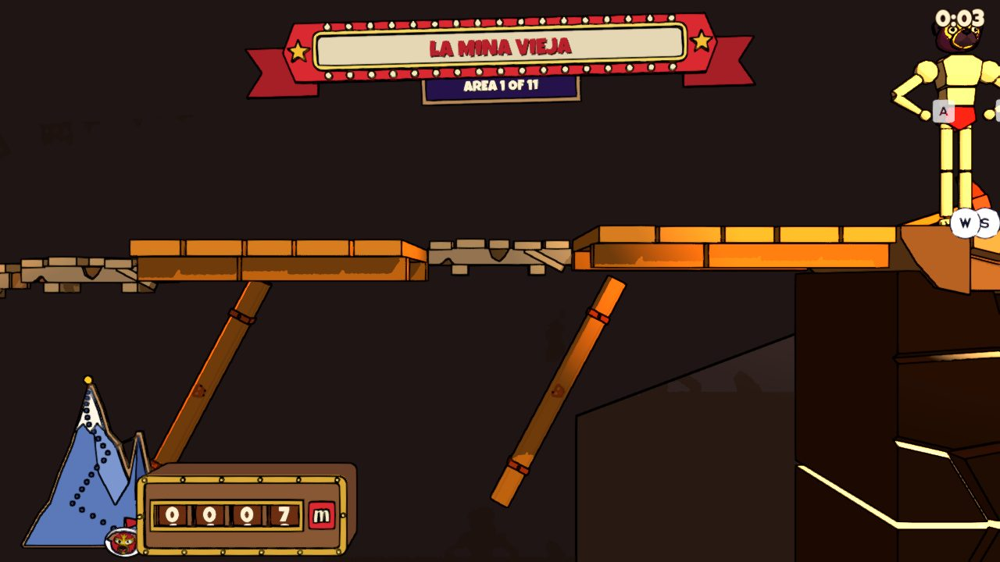
Water should use Del Mar's shader and splashes
21:39"the water should use the water shader and splash effects we use in del mar"
First pass done, seen in the game; note 22 asks for more

What is going on
- The Peak has 14 pools and rivers: the Sump in the mine and 13 in Las Aguas Negras. Each is a plain see-through box with a pale strip for the surface. Rivers also carry white flecks so you can read the current.
- Falling in plays one splash sound and shows nothing.
- Del Mar's sea has the foam-circle surface, foam rings where things stand in it, ripple rings, and the splash: a fan of pale blobs, two rings and the sound.
Plan
- Splashes. Del Mar's splash can be thrown at any point, so it drops in as it is. Going in gets the full splash, climbing out a small one, and anything else that lands in water (broken plank pieces, barrels, boulders, the cart of note 6) gets one sized to it.
- Surface. Del Mar's surface is made for a sea you look down on. The Peak's water is seen from the side, as a tank. So: the top of each pool wears Del Mar's surface (foam circles, ripple rings where you splash, foam where piles and rock stand in it), and the front becomes a clean tint with Del Mar's waterline. The river flecks stay, because the current has to be readable.
- Check. Pictures of the Sump, a river and a small pool, and the frame rate in Las Aguas Negras with all 13 on.
After: the first pass (from the thread)
The thread did this note as it was first written, before note 22 arrived. Every pool now wears Del Mar's surface on its top and throws Del Mar's splashes: going in, coming out (smaller), and when rocks, broken plank pieces or the cart land in it. The front is a tint that deepens downward, with a waterline. It is tinted per cave; one line switches it to Del Mar's bright blue. The frame rate in Las Aguas Negras with all 13 pools on is unchanged within the machine's noise.
What it did not change is everything note 22 asks for: the water is still one box per stretch, the current specks are still squares, and nothing pours over a lip. The splashes carry straight over into that overhaul; the surface will be redone as part of it. Not seen: this water with a climber swimming in Las Aguas Negras.
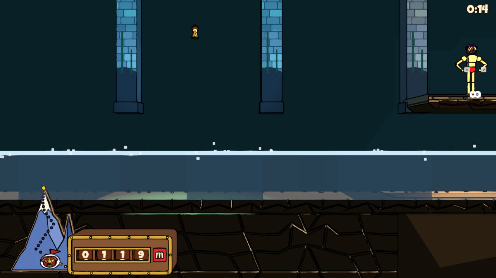

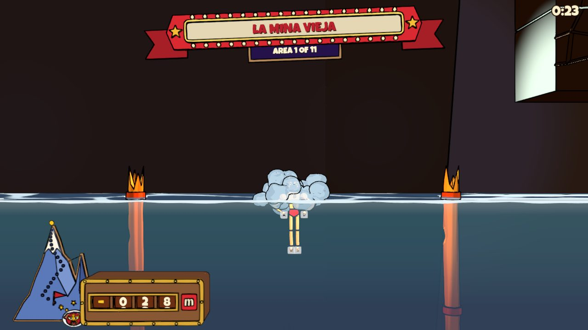

The mine's bucket: nothing sticks, collision is wrong
21:41"the bucket that goes up and down in the mines does not have stickyness for some reason and its collision is wrong. Fix it"
Fixed, seen in the game
What is going on
The bucket's collision was authored with its floor at the bucket's zero line. The model was made with its zero line through its middle. Nobody lined them up, so the bucket you see hangs 0.52 m lower than the bucket you can touch.
- Nothing sticks: the lower half of the drawn bucket has no collision at all, so a hand on it holds nothing. The bucket itself is set to grip (it is iron, like the counterweight).
- Collision is wrong: you stand on a floor that floats in the middle of the drawn bucket, and the walls carry on about 0.7 m above the drawn rim, unseen.
Plan
- Lift the drawn bucket 0.52 m so its base sits on the collision's floor, and trim the collision's walls from 1.2 m to the drawn rim, 1.04 m. (Written, parked.)
- The handle over the top stays drawn only. If it were solid it would close the bucket's mouth and you could not get in.
- Still to do: watch a climber hold it and ride it, and a picture.
The same check, run over the whole mountain
I compared every moving piece's collision box with its model's box (119 pieces). A box can't tell a deliberate difference from a mistake, so each of these needs a look in the game, but these are the ones that stand out:
- The bull wheel on the cliffs: collision 7.9 m across, model 5.0 m across.
- The gondolas on the cableway (8 of them): the collision reaches up to 2.3 m further to one side than the cabin.
- The kites on the storm ridge (3): collision 1.2 m wide, model 2.5 m wide and much taller. May be meant (only the frame holds).
- The temple's jaw: the model hangs 0.9 m lower than its collision.
- The vultures (3): the model sits about half a metre higher than its collision.
- Smaller ones, under half a metre: the crystal raft, the wall snails, the serpent's vertebrae.
After (from the thread)
Hands hold the lower wall and ride it; feet hold standing inside it. The counterweight was checked the same way and already matched.
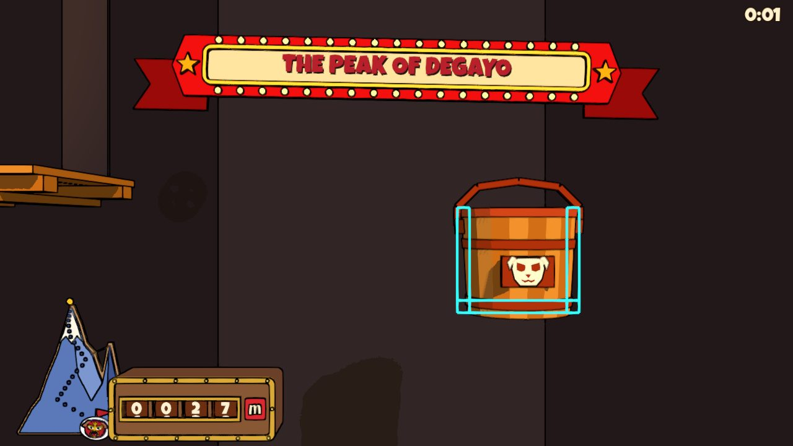

The two hanging lines in the mine look like ropes
21:42"in the mine area, remove these track things and replace them with something else. They look like the ropes you grab later."
Third try in the game, Parker to judge
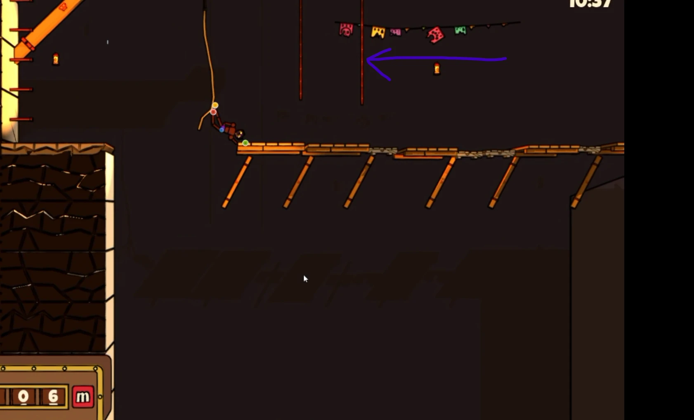
What is going on
They are the bucket lift's two cables: one runs to the counterweight, one to the bucket (the bucket of note 3 is just above this frame). Each is a 16 m iron line, 8 cm thick, drawn half a metre behind you. They are scenery: they don't move and can't be held. The real rope is 4 m to their left and the same thinness, and the chains you grab later in the mine are drawn as the same thin dark red line. So they read as two more things to hold.
Plan
- Take both cables out. Whatever replaces them must not be a thin hanging line, because in this mine a thin hanging line is always a rope or a chain.
- First try (written, parked, and I have not seen it in the game): a timber head frame that the bucket and counterweight run in, three of the kit's scaffold pieces stacked, set 2.4 m back.
- My doubt about it: orange timber is also the colour of things you hold. If the frame reads as a ladder, the next try is a plain dark iron mast, or nothing but the pulley.
- Still to do: a picture for you to judge.
After (from the thread)
My doubt was right: the timber frame looked like something to climb, so it is gone. A dark gallows on its own left the bucket floating in the air (try 2, also gone). Try 3 is a hoistway cut from flat dark card, in the back wall's grey: a gallows on the station deck and a board the bucket and counterweight run in front of. It is broad, dark and flat, with no rungs and no thin lines.


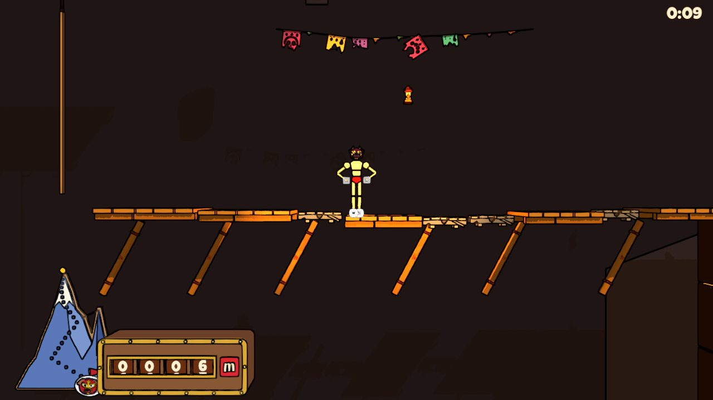
Wind streaks in the mine where there is no wind
21:45"there is wind in the mine at this part that seams to do nothing"
Fixed, seen in the game
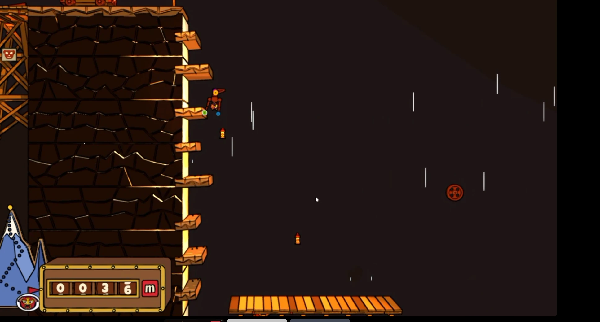
What is going on
You are right that it does nothing: there is no wind there. The mine has one wind, the down-draught inside the waterfall, 40 m to the left of where you were. Its streaks are being drawn in the wrong place.
To make the streaks stand upright for an up-or-down wind, the code turns the whole streak-maker a quarter turn. That also turns the box the streaks are born in and the way they travel. The waterfall's draught is a tall thin column (6 m wide, 112 m tall). Turned on its side it becomes a band 112 m wide and 6 m tall, lying across the mine between 31 and 37 m up, with upright streaks sliding sideways through it. That band is what you climbed through.
The same mistake hits every up-or-down wind on the mountain: three updraughts in the mushroom garden and one in the chimney. Their streaks are also in the wrong place and moving the wrong way, which would make those updraughts hard to find. Sideways winds (the cliffs, the storm ridge, the glacier) are drawn correctly.
Plan
- Stand the streak itself upright and leave the streak-maker alone. (Written, parked.)
- Still to do: a picture of the waterfall column and of one updraught in the mushroom garden.
After (from the thread)
One aside from the thread, not changed: an updraught only gets 8 streaks, which is easy to miss.

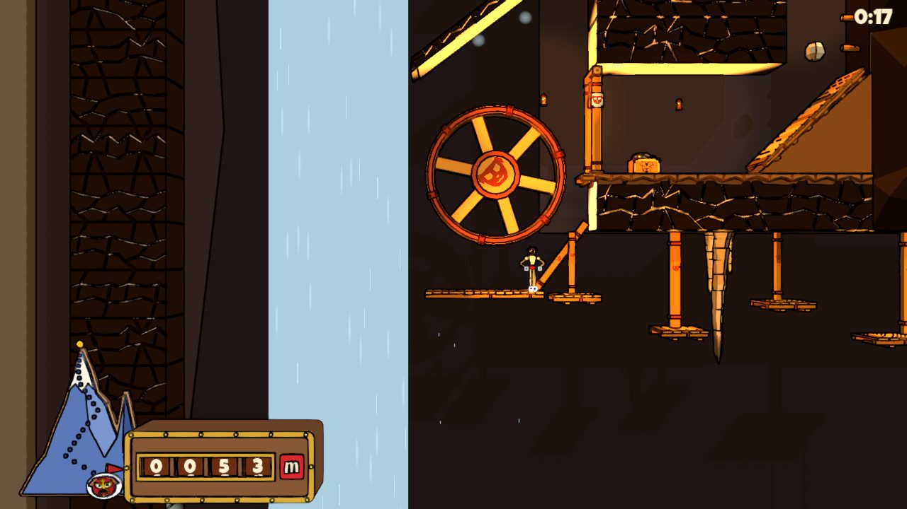
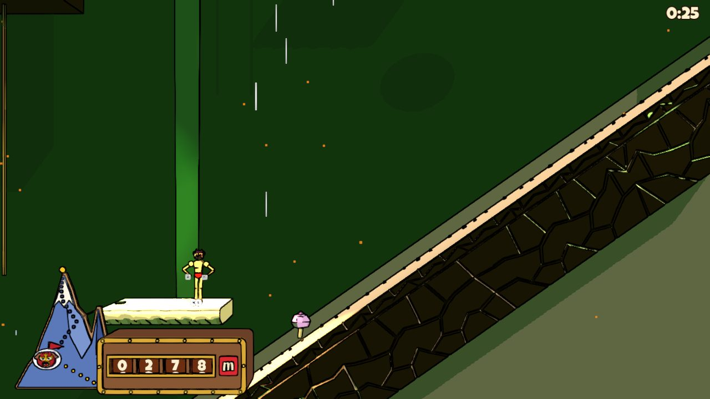
The falling minecart is too slow; the track end has no collision
21:46"the mine cart that falls here falls too slow and should instead have physics a little after it falls. Also this spot right here should have collision on the boards going across the tracks"
Fixed, seen in the game; one new rule and one call for Parker
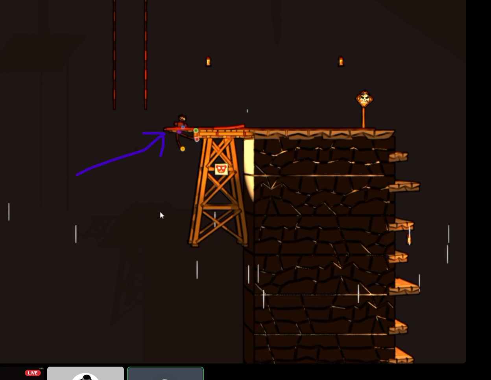
What is going on
The cart (challenge 1.7, El Carrito Loco). It never really falls. It is slid along a drawn curve from the track end down to the Sump, 75 m of curve, at a top speed of 5 m/s. So the "fall" is a steady glide that takes about 15 seconds. A loose thing dropped from there reaches the water in 4 to 7 seconds, depending on how heavy we let it fall.
The track end. The broken rail is drawn sticking out 1.6 m past the last piece of collision. The collision stops just past the trestle; the boards in the picture are drawn only. The author stopped it there on purpose, to keep the chains out of reach from the track (see the call below).
Plan
- Track end: stretch the collision to the end of the drawn boards. (Written, parked.) The cart's path already runs over them, so the ride is unchanged.
- Cart: keep it on its path while it is on the rails, so the ride and the leap for the chains stay as designed. About a cart's length past the track end, let go: the cart becomes a loose body with the speed it had, tips, drops under gravity, knocks about on the rock and lands in the Sump with a splash (note 2's splash). If you are still holding it, you go with it. It comes back to the top after its usual wait.
- Speed on the rails: it creeps up to 5 m/s today. Worth trying 7 to 8 so the leap is a real decision. A feel number for you two.
- The first cart (the ride in from the station) stays on its path. It has to deliver you.
After (from the thread)
The track end is solid to the end of the drawn boards. The chains were not moved. The cart itself is still to do.

After (from the thread)
The cart now falls for real. It stays on its road along the rails and through the first dip, then about a cart's length past the boards it becomes a loose 140 kg body with the speed and lean it had. Empty, it tips, tumbles and hits the Sump 5.3 seconds later, where the glide used to take about 15. It sinks, lies on the bottom, and is back at the top about 12 seconds after that. The first cart, the ride in from the station, is untouched. The cart's speed on the rails is still 5 m a second.

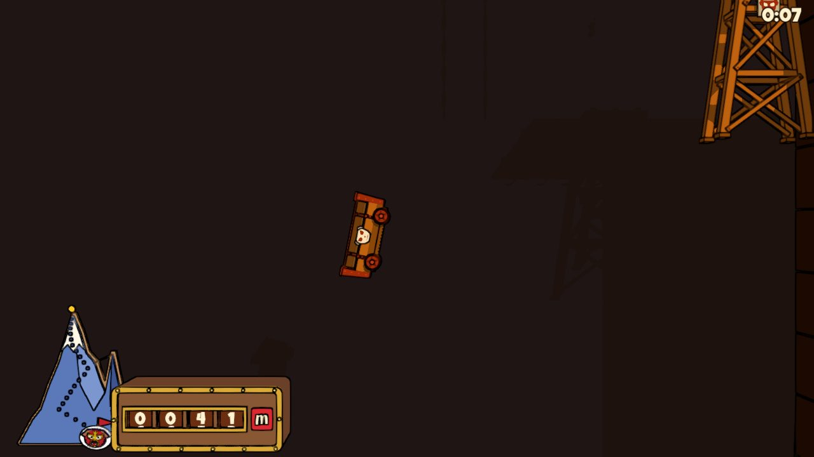

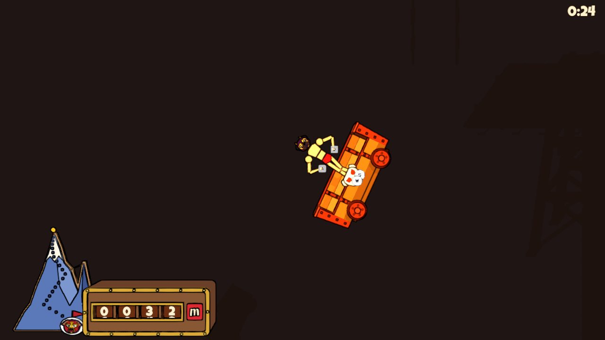
Camera far too pulled back, character too high
21:46"the camera in general is wayyyy to backed out and the character is too high up on it"
Fixed, seen in the game; two calls for Parker
What is going on
The course sets the camera per challenge, in 111 zones. The area authors were told to "show the drop": pull back so the launch, the landing and the fall below are all in frame, and look down. They did, everywhere.
- Pulled back: with no zone the camera shows 8.4 m of height, and the climber is about a fifth of the screen tall. The zones' middle value shows 18 m (climber a tenth of the screen), and the widest show 28 m (climber a sixteenth). 96 of the 111 zones are wider than 12 m.
- Too high: 68 of the 111 zones aim the camera below the climber, typically 2 to 4 m, at worst 9.5 m. That pushes you into the top third of the screen. The pictures under notes 4 and 5 are zones that show 16 to 18 m and look 3 to 4 m below you.
Plan
- One rule in the camera code, over every zone at once: a zone may ask for a wider view only up to a cap, and may look below you only up to a cap. Redoing 111 zones by hand is not needed.
- Starting numbers I'd try: the widest view 11 m of height (the climber about a sixth of the screen), looking at most 1 m below you. Standing still with no zone stays as it is (8.4 m).
- The camera already steps back by itself when you fall or fly. That stays, so a long fall still shows where you are going.
- Before and after pictures of the same three spots go here. The two numbers are yours to change.
After (from the thread)
One rule in the camera code, two numbers: the widest view is 11 m of height and the camera aims at most 1 m below you. It changes 101 of the 111 zones; no zone was edited by hand. Checked standing still at five spots. Not checked by eye: the camera while you fall, fling or ride the cart.


The dark plank by the big wheel should be part of the bridge
21:47"make this part just part of the larger bridge to the right"
Fixed, seen in the game

What is going on
It is the staging under the winding wheel (challenge 1.9, La Polea Grande). The staging is two pieces: 3.8 m of ordinary planks, and at the waterfall end a separate 1.2 m plank that the spray soaks for 1.5 seconds in every 6. While soaked it is slick and can't be held. Because it is its own piece it is drawn as its own, darker plank, so it reads as a different thing stuck on the end.
Plan
- Make the staging one 5 m run of planks, drawn as one bridge. (Written, parked.) The spray no longer soaks that end.
- If you want the wet end back later, the right way is to keep one bridge and darken its end only while it is wet.
- Still to do: a picture.
After (from the thread)


Cave-in rocks: one second more between them, and bounce away instead of vanishing
21:49, 21:52"this part needs a longer delay between rocks and the rocks shouldnt despawn, they should bounce into the background off a little messed up board"
"like a one second more delay, not a hugely longer delay"
Fixed, seen in the game

What is going on
Challenge 1.10, El Derrumbe. Two sources drop rocks down the shaft, one every 4.0 seconds and one every 5.6. Together that is a rock about every 2.3 seconds, and now and then two within a second of each other. Each rock is simply removed 3 seconds after it appears, wherever it happens to be. The author did that on purpose so no rock would roll along the gallery, but it means they blink out on the ramp in front of you.
Plan
- Gap: one second more on each source: every 5.0 and every 6.6 seconds. (Written, parked.) That is a rock about every 2.8 seconds on average. Note 11 replaces this: stretching the two timers moves the double fall around, so the gap has to be done as one written rhythm instead.
- No vanishing: the rock keeps rolling down the fallen beam. At the beam's foot sits a short broken board, propped up at one end. A rock that hits it is thrown up and back, away from you into the dark behind the gallery, and is only cleaned up once it is out of sight. From the moment it leaves the board it can't hit you.
- The same board can be set at the foot of any other rock fall on the mountain later.
- Check: watch ten rocks in a row leave by the board, and none come to rest on the gallery.
After (from the thread)
A snapped board on a heap of rubble (both from the kit) sits at the foot of the beam. Each rock that reaches it is thrown up and about 2.3 m back, shrinks as it goes, can hit nobody from then on, and drops out of sight behind the gallery's floor, where it is removed. The thread watched 14 rocks in a row leave by the board; none got past it onto the gallery. It also fixed a small thing it found: every rock source used to drop a rock at once on the first moment after a load.
Not tested: being knocked out by a rock. The board's sound was chosen without being heard.

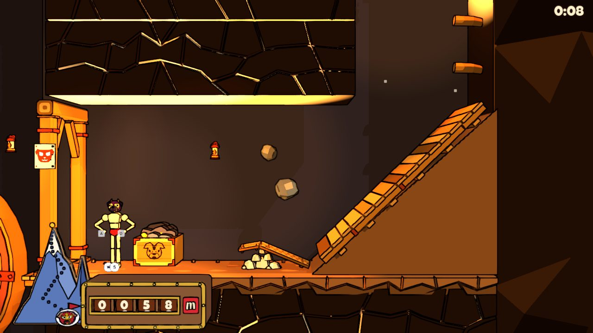

Cave-in rocks: a slightly smaller hitbox
21:50"make the hitbox on the boulder here a little smaller so it's slightly more forgiving"
Fixed, seen in the game
What is going on
A rock knocks you out when its middle comes within 0.74 m of the middle of your head, chest or hips while it is moving faster than 2.2 m/s. The rock itself is 0.42 m in radius, so the knock-out reaches 0.32 m past its surface.
Plan
- For these rocks, bring that down from 0.74 m to 0.60 m, about a fifth smaller. (Written, parked.) The rock you see and bump into stays the same size; only the knock-out is smaller.
- Other rock falls on the mountain keep their size unless you say so.
- A feel number: 0.60 is my first guess at "a little".
After (from the thread)
Kept at 0.60 m. Not tested by being hit.
Cave-in rocks: an extra half second after the double fall
21:58"make it so after the double rock fall, there is an extra .5 seconds along with the extra one second we added"
Fixed, seen in the game
What is going on
The "double" is not designed. It is what happens when the two timers (every 4.0 s and every 5.6 s) land almost together. Their pattern repeats every 28 seconds and holds 12 rocks. Twice in that loop two rocks fall 0.4 seconds apart: that is the double. Twice more they fall 1.2 seconds apart, a looser pair.
Today's gaps round the loop, in seconds: 3.6, 0.4, 4.0, 1.2, 2.8, 2.8, 1.2, 4.0, 0.4, 3.6, 2.0, 2.0.
Simply making both timers a second slower (what I parked under note 9) does not keep this pattern. It moves the doubles to different moments and makes the loop 5 and a half minutes long. So your request can't be done by changing the two timers.
Plan
- Write the rhythm out as one looping list of gaps, so it is exactly what you ask for and the double stays a double.
- How I read your two notes together: every gap gets one second more; the gap straight after a double gets one and a half; the 0.4 inside the double stays as it is.
- That gives, in seconds: 4.6, 0.4, 5.5, 2.2, 3.8, 3.8, 2.2, 5.0, 0.4, 5.1, 3.0, 3.0. A 39-second loop, still 12 rocks.
- The rocks keep falling from the same two spots, so they still come down the same two lines.
- Small: the rock sources learn to follow a written list of gaps. When this is done, note 9's parked gap change is dropped.
Settled (Parker, 22:00): "no just the 0.4 ones count as doubles". The looser pairs, 1.2 seconds apart, are ordinary gaps and get the one second only. The list above stands as written.
After (from the thread)
The two sources now follow the written list. Watched for 46 seconds, the gaps came out as 5.5, 2.2, 3.8, 3.8, 2.2, 5.0, 0.4, 5.1, 3.0, 3.0, 4.6, 0.4: the list, starting part way through. Each rock still falls from the source it fell from before. Note 9's parked gap change is gone.
Cave-in rocks need a dark hole to come out of
22:18"the rocks spawn right here, they need some kind of modeled dark hole they come out of"
Plan, not sent to the thread

What is going on
The shaft of challenge 1.10 ends in a flat rock roof 77 m up. The two rock sources sit 0.7 m under that roof, in open air. So each rock simply appears just below a flat ceiling, in plain view from the top drift, with nothing it could have come from.
Plan
- Cut a chimney up into the roof. A real hole about 2 m wide over the middle of the shaft, rising 4 to 5 m into the roof rock and closed at its top. There is room: the roof rock is 10 m thick there.
- Make it dark. The inside of the chimney is black, with no back wall showing, so it reads as a hole going up into the mountain.
- Dress the mouth. Snapped timber stubs and a lip of rubble round the opening (the kit has a rubble pile), so it looks like the place the roof gave way.
- Move the sources up inside it, out of sight. A rock then falls out of the dark instead of appearing. Both sources keep their left-to-right positions, so the rocks still come down the same two lines, and the rhythm of note 11 is unchanged. The warning trickle of dust comes out of the mouth.
- One thing to watch: a rock that starts 4 m higher arrives a little later and a little faster. The warning time before each rock may need the same small stretch so the tell still matches the rock.
- Check: a picture from the top drift and one from the foot of the shaft looking up, and that the rocks clear the mouth without catching on its rim.
The curtain's holds: stay wet and drippy, but show clearly what is going on
22:19 to 22:26Plan, one thing to confirm; not sent to the thread

What Parker said, in order
22:19 "if these are going in and out of the wall, give them an in and out animation"
22:20 "make them shake before going in, and dont change the one further up since w are not there yet"
22:21 "make it take longer so they are out for longer. When in, make sure you can pass thorugh the spot"
22:23 "make some of them not go in and out and make them a differnt color"
22:26 "actually we will have it be wet drippy like it is, but make it so there is more of an indication of what is going on"
Where that leaves it: the holds do not slide in and out. They stay as designed, soaked in turn by the waterfall's spray. The job is to make that readable. The sliding, and passing through the spot, are dropped.
What is going on
The waterfall's spray drenches each hold in turn: 2.6 seconds wet, 3.4 seconds dry, each row 0.7 seconds ahead of the row under it, so the wet comes down the wall. A wet hold is slick and can't be held.
The only thing shown is a colour swap: a wet hold turns dark, all at once, with no warning and no water on it. Against a dark wall a dark hold looks like a hold that has gone, which is why it read as holds popping in and out. Note 8's dark plank was the same wet look misread as a different object.
Plan
- Show the water arriving. About half a second before a hold goes wet, a trickle starts running down onto it from above and the first drops fall off it. That is the warning that replaces the shake.
- Show it wet. While wet, water runs over the hold and drips off underneath it, with a small splash where the trickle lands. The hold itself turns a shiny wet blue-grey, not near-black, so it is plainly still there and plainly wet.
- Show it drying. The trickle stops, the last drops fall, and the colour comes back over a moment, so you can time the grab.
- Show the wave. The wet travels down the wall row by row. A thin veil of spray that sweeps down the two columns with it makes the pattern readable from a distance, before you are on the wall.
- Sound. A soft drip and trickle on the wet holds near you.
- La Cortina only (Parker, 22:20). The 7 wet holds in Las Aguas Negras stay exactly as they are until you have played that far. They can take the same look later with no extra work.
Added at 22:27: the drip you can watch
"maybe like a slow moving water drip you can watch fall down and get them wet"
- This becomes the main tell, and the cause. A fat drip of water runs slowly down each column of holds. You can watch it come. A hold goes wet when the drip reaches it, stays wet for a moment after it has passed, then dries. Nothing gets wet without a drip you could see coming.
- Slow. Today the wet moves down the wall at about 1.8 m a second, with nothing to see. First try for the drip: about 1 m a second, so it takes a bit over a second to go from one row to the next.
- Several drips, evenly spaced, follow each other down a column, about 7 m apart. That gives each hold about 2 seconds wet and 5 seconds dry, the same as "dry for longer" below.
- The two columns are out of step, so when the drip is on the left hold of a row the right one is dry. One hold of every pair is always dry, as the challenge was designed.
- Each drip starts at the top lip, where the curtain of the waterfall spills over, and falls off the bottom row into the throat.
- This replaces the "trickle arriving" and the "veil of spray" above: the drip does both jobs. The wet look, the drying and the sound stay.
- The speed and the spacing are first tries for you to feel.
Carried over from the sliding idea
Two of your earlier asks still make sense with wet holds, so I have kept them. Say if either should go.
- Dry for longer (from "out for longer"): first try 5 seconds dry and 2 seconds wet, where today it is 3.4 and 2.6. One hold of every pair is still always dry.
- Some holds never get wet, in a different colour (from "make some of them not go in and out"): first try 5 of the 28, one in every third row, swapping sides, in a pale bone colour, as rests.
A rope from the top of La Cortina, hanging to about half way down
22:26, 22:27"make a rope hanging about half way down this challenge"
"b" (to my question: a short rope in the middle, or a long rope from the top lip that reaches down to half way)
Plan, settled; not sent to the thread
What is going on
"This challenge" is 1.11, La Cortina, the wall of note 13. It is the last challenge of the mine: 14 rows of holds, 17.7 m from the balcony (72 m up) to the lip where the mine ends (89.7 m up). There is nothing on that wall but the holds: no rest and nothing to catch you.
Plan
- One long rope hung from the top lip, reaching down to about the middle of the wall: about 9 m of rope, its tail near row 7 (around 81 m up).
- So the wall becomes two halves. The lower half is the wet holds. From about half way you can take the rope and climb it to the top instead of the holds.
- It is a real rope like the miner's rope lower down: you can hold it, hang, swing and climb it. It also catches a fall from the upper rows.
- It hangs from the lip on a timber arm or iron bracket, set out from the wall far enough that the rope clears the holds, and within a reach of the columns at its tail.
- Check: the reach from the holds to the rope's tail, the climb up it, and stepping off onto the lip at the top.
- One thing to know: this makes the upper half of La Cortina much easier, since a rope never gets wet. If that is too kind, the tail can be shortened to start higher.
A bouncy lifesaver at the foot of the wet slide, to throw you back to the ledge
22:30"add a bouncy lifesaver here that lunches you back at least to the ledge on the right"
Plan, settled; not sent to the thread

What is going on
The sloping slab under the balcony is slick: nothing on it can be held. Anyone who drops off the balcony or comes off the first rows of La Cortina lands on it, slides 10 m down to its foot and is tipped into the waterfall's throat, which carries them down to the Sump at the bottom of the mine. That is the mine's big fall, and it was designed as the price of a miss here.
Plan
- The lifesaver. Del Mar's red and white life ring (the kit has it, and Del Mar's floats already bounce you), set at the foot of the slab where you circled, tilted to face up and to the right.
- The throw. "The ledge on the right" is the balcony the climber is hanging from (Parker confirmed: "yes that ledge"), 10 m above the foot of the slab and about 5 m to the right. The game already has bounce pads (the mushroom caps), so this is one of those with a life ring's look. To clear the balcony's edge with a little to spare it throws you at about 8.5 m a second, steeply up and a little right. You rise about 2.5 m above the balcony and come down onto it about 4 seconds after the bounce (falls are slow in this game). A first-try number.
- It squashes and springs like Del Mar's floats when you hit it, with their sound.
- What it changes: a miss low on La Cortina no longer costs the whole mine. You slide, bounce and are back on the balcony. Falls from higher up, or out past the slab, still go to the Sump.
- Check: drop a climber onto the slab from the balcony and from the first three rows, ten times each, and count how many land on the balcony. Also that the throw does not carry you into La Cortina's holds on the way up.
Las Aguas Negras: the dark parts of the first pipe should be breakable pieces
22:42"make these dark parts breakable pieces"
Plan, not sent to the thread

What is going on
Challenge 2.1, El Borde. The pipe is 19.5 m of red painted iron that you cross hand over hand. The two dark sections, each 1.5 m long, are grease: slick, so a hand on them holds nothing. The design was "two greased stretches need a 1.5 m lunge".
This is the third time tonight that "dark means slick" has been read as something else (notes 8 and 13 were the other two). Dark on a dark cave does not say "slippery".
Plan
- Make the two sections breakable. You can hold them, but about a second after you put a hand on one it shudders, snaps and falls away in pieces into the water below. It comes back about 8 seconds later. This uses the breaking-hold rule the game already has (the rotten planks of note 1), with the fixed return.
- Make them look breakable, not dark. Rusted through and cracked, in a paler, flakier colour than the red pipe, so you can tell before you touch one that it will not last.
- What it changes in play: today you must lunge 1.5 m past each section. After this you can also use a section as a quick stepping stone if you keep moving, and if you break one and wait you are back to the lunge until it returns.
- The chain that hangs just past the second section (the one mercy over the water) stays as it is.
- The pieces that fall should splash when they hit the water (note 2's splash).
- Check: a hand on a section holds for about a second and then is let go as it breaks; the section returns in its own place; the lunge across a missing section is still within reach.
Las Aguas Negras: the light under the water pulses and flashes
22:43, 22:44"this area is pulsing and flashing weird, lighting glitch"
"under the water"
Suspects listed, not yet reproduced; not sent to the thread
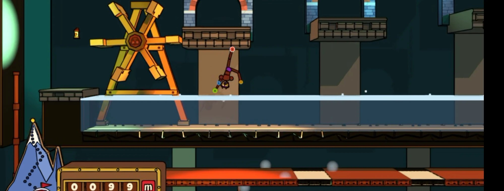
What is going on
I have not seen it move, so these are suspects from the code, most likely first. The fix starts by standing a climber here and watching.
- Nearly every lantern in this area flickers, and the toon shading turns a flicker into a pulse. 24 of the 25 lanterns of Las Aguas Negras are set to flicker (107 of 214 on the whole mountain): their strength swings between 72% and 100%, several times a second. The game's shading cuts light into hard-edged bands. On a wide flat surface near the edge of a lantern's reach, a small change in strength moves the band's edge a long way. The race's bed is exactly that: flat, 24 m long, and 4 to 8 m under three lanterns that reach 9 to 10 m. So instead of a soft flicker you get a hard-edged patch of light growing and shrinking on the bed, seen through the water.
- Lanterns switch on and off with no fade. Only lanterns within 34 m of you are lit, and one that crosses that line snaps on or off in a single frame. With the camera as far out as it was tonight, that could happen on screen as a flash. The closer camera of note 7 hides most of this, but it is still a snap.
- The water box sits exactly on the bed. The water is a see-through box whose bottom face lies in the same plane as the bed's top, and whose top face lies inside the thin pale surface strip. Two see-through faces in the same place can flicker against each other as the camera moves.
Plan
- Reproduce it at challenge 2.3 and find which of the three it is. It may be more than one.
- If it is the flicker: make it much gentler and slower in the cast light (a few percent, not 28), and keep the lively flicker on the lantern's own flame, which is where the eye expects it.
- If it is the snap: fade lanterns in and out over half a second.
- If it is the water box: this goes away with note 2, which rebuilds the water. The thread doing note 2 should be told about this spot.
- The flicker rule is the same on the whole mountain, so whatever is wrong here is likely wrong wherever a lantern hangs over a flat floor.
Las Aguas Negras: the rings should be fixed to the wall behind, not hung on chains
22:44"make these rings attached to the wall behind instead of on chains since it looks like you should be able to colide with the chains but you cannot"
Plan, not sent to the thread

What is going on
Only the rings are real. Each ring is a small fixed hold in the air. The chain above it is a drawn prop, 3 to 4 m long, set 30 cm behind you, with no collision and nothing to hold. So you swing straight through a chain that looks like it should stop you or be something to grab. There are six: two over each of the first three arches.
It is the same mistake as note 4's lift cables: a thin hanging line that is only scenery. In this game a hanging chain or rope is normally something you hold.
Plan
- Take the six chains out.
- Fix each ring to the wall behind: a riveted iron plate bolted to the back wall with a short eye bolt holding the ring, the way a mooring ring sits on a quay wall. From the side you see the ring with its plate directly behind it and nothing above it.
- Where the back wall is too far behind a ring for that to read, give the ring a short stone or brick pad to sit on, so it is plainly fixed to something.
- The rings themselves do not move, so the challenge plays exactly as it does now: the same reaches and the same flings from crown to crown.
- Check: a picture from the same spot, and swing a climber through where each chain was.
The same thing elsewhere
I looked for other drawn-only chains and lines hanging close to the climber on the rest of the mountain. Worth a look when you get there, not changed now: two counterweight chains in the temple (area 5), the slag pan's chains in the chimney (area 6), and four hanging vines in the mushroom garden (area 4). The strings of paper flags and pennants are also lines, but they read as decoration.
Las Aguas Negras: the rising gates should be machine pistons
22:49"make these things some kind of machine pistons."
Plan, needs a model; not sent to the thread
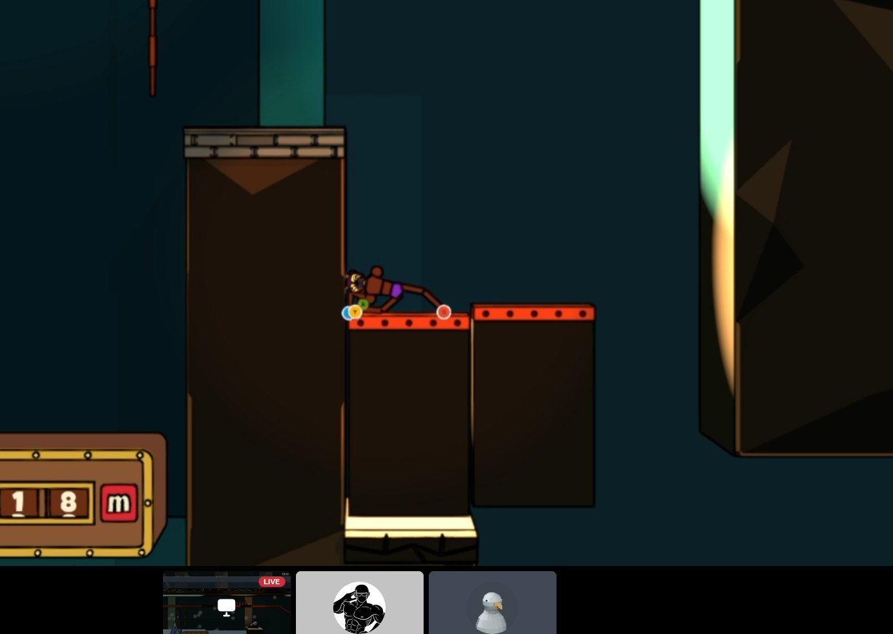
What is going on
They were written as three sluice gates. Each is a slab 2 m wide and 3.4 m tall that rises 3.2 m in 1.8 seconds, waits 2 seconds, slams back down in 0.4, waits 2, and goes again. You ride one up and cross to the next as it drops. Only the red iron top can be held; the dark body is slick.
Drawn as a plain dark slab with a red lid, a gate reads as a block of wall sliding up and down for no reason. Nothing shows what drives it.
Plan
- Redraw each one as a piston, with the same size, the same top, the same timing and the same collision, so the challenge plays exactly as now.
- What you would see: a heavy riveted iron head (the part you ride, as today) on a broad polished steel ram that slides up out of a fixed housing bolted to the floor. The housing stays put, so when the head rises you watch the ram come out of it, and when it slams you see it drive home.
- A broad ram, not a thin rod. A thin rod under a wide head would open gaps under the heads that are not there today, and a climber could get under one before it slams. Keeping the ram as wide as the head keeps what you see equal to what you touch (note 3's lesson).
- Life: a hiss and a puff of steam at the housing as it rises, a clang and a shake as it slams. The slam is the dangerous half, so it should be the loud half.
- The model. The kit has a piston head and the temple's piston, but neither is this shape (2 m wide, 3.4 m of travel, upright). This wants one new model made to the gate's exact size, plus the fixed housing. That is a job for the Building Maker, asked through the Top Dog session.
- The challenge is named Las Compuertas (the sluice gates). If they become pistons the name could change too, for example Los Pistones. Yours to say.
Rope physics: you can't get a good swing, and they launch you up
22:50"we need to fix the rope physics. Make it so you can swing back and forth on them better. Right now they like launch you up weird but you can't get a good swing on them"
Causes found in the numbers, plan; not sent to the thread
What is going on
This covers every rope, chain and vine on the mountain: they are all the same thing, a string of half-metre pieces pinned end to end. Four things in how they are set up work against a swing. I read these from the code and have not measured a swing yet.
| The climber | The miner's rope (4.8 m) | |
|---|---|---|
| Mass | 22 kg | 36 kg (3.6 kg per half metre) |
| Gravity on it | 2.79 m/s², the game's slow fall | 9.8 m/s², full |
| So its weight | about 61 newtons | about 353 newtons |
- The rope outweighs you six to one. You are the light thing on the end of a heavy bar. Shifting your body barely moves it. A chain is nearly twice as heavy again.
- The rope and you fall at different speeds. Gravity pulls the rope three and a half times harder than it pulls you. Left alone, the rope swings back to straight in under 4 seconds; a climber on a weightless rope that long would take about 8. So the two never swing together. The rope snaps back on its own clock and drags you with it.
- Every piece of rope is braked. Each piece loses a quarter of its speed every second, and its turning is braked harder still. Whatever swing you do build bleeds away within one swing.
- Your hand is welded stiff to the piece it holds. On rock that is right: it stops you spinning on a hold. On a rope it means every push of your arm twists one half-metre piece. That piece kinks, and 36 kg of rope under full gravity yanks the kink straight. I think that whip is the "launch you up weird". It is a likely cause, not a proven one.
History to keep in mind. Earlier on 11-12 you asked for the ropes to be "about 3x heavier", because holding one a climber could haul it anywhere and nearly fly. That is why they are this heavy. The fix must not bring that back.
Plan
- Build a rope bench first. A test that hangs a climber on a 5 m rope and a 9 m chain, pumps on a script, and measures how high each swing gets, how long a swing takes, and the highest speed the body is thrown at. Without numbers this is guesswork, and ropes are in nearly every area.
- Same gravity for rope and climber, so they swing as one pendulum at one pace.
- You are the weight on the end, not the rope. Bring the rope's weight down to a fraction of yours. To stop the old "haul it anywhere and fly" coming back, cap how hard an arm can pull on a rope sideways and upward, where today it pulls as hard as it does against rock.
- Take the brakes off. A small amount to stop a rope jittering at rest, nothing that eats a swing.
- Let the hand pivot on a rope. Held firmly along the rope, free to turn, the way a hand holds a real rope. Your body then hangs under your hand and swings; it no longer twists the rope.
- What "better" should mean, for you to agree: from hanging still, four or five pumps take you to a swing of about 60 degrees each side; letting go at the bottom throws you forward and up in a way you can predict; nothing throws you upward unless you swung there.
- Then re-check every designed move that uses a rope or chain. The course was laid out against the old ropes. A better swing reaches further, so some gaps will become too easy and some catches will sit in the wrong place.
Las Aguas Negras: the barrels should go over the fall, not vanish on screen
22:53"the barrels should fall not despawn on screen"
Plan, not sent to the thread
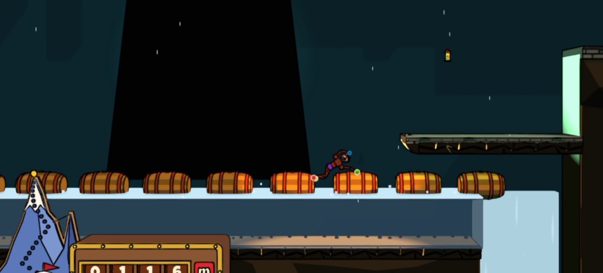
What is going on
There are 13 barrels. Each is slid along a straight line the length of the pool, 34 m, at just over half a metre a second. The line ends about 2 m past the end of the water, right over the cascade's lip. When a barrel gets there it is hidden and put back at the start of the line in the same instant. So on screen a barrel floats to the lip and blinks out, with a 24 m waterfall right under it that it never uses.
The same instant, a barrel blinks into being at the west end of the pool. If you are standing there you will see that too.
Plan
- Over the lip. At the end of the water the barrel is let go: it becomes a loose thing, tips over the lip and falls down the cascade, tumbling, and splashes into the river 24 m below (note 2's splash). It is cleaned up down there, out of sight.
- If you are still on it, you go over with it. That is the designed price of this challenge anyway: miss here and you go down the cascade.
- Coming in. A new barrel should arrive, not appear. (My first idea was the flume's mouth; Parker's cove, below, replaces it.)
- The spacing and speed of the barrels on the pool do not change, so hopping them plays as now.
- This is the same piece of work as note 6's falling cart: a thing that rides a line and is handed to real physics at the end of it. One mechanism serves both. Note 9's rocks are the same idea too: nothing should blink out where you can see it.
- Check: watch five barrels in a row go over, one with a climber on it, and watch five arrive at the west end.
Added at 22:54
"they should come out of some modeled cove and they should have some more space between them, like 40% less total barrels, and some variation in when they are sent out"
- A modelled cove. This replaces my flume idea above. At the west end of the pool, a dark arched opening at the waterline, built in the same brick as the aqueduct's arches, black inside. Each barrel floats out of the dark into view. It needs a small piece of new stonework; the kit's brick arch pieces may cover it, to check.
- 40% fewer. 13 barrels become 8.
- More space. Today the barrels are 2.6 m apart, middle to middle, which leaves 0.8 m of water between one barrel's end and the next: a step. With 8 on the same pool the average is 4.2 m apart, about 2.4 m of water between ends.
- Uneven sending. The cove lets them out on a written, looping rhythm, not a steady beat, so the gaps differ: some pairs close, some far. Like the rocks of note 11, it is a list of numbers you can change.
- One thing to check before the numbers are set: the barrels all drift at the same speed, so a gap never closes while you wait. Every gap has to be one a climber can actually cross from barrel to barrel, or the only way on is to swim. I'd measure the longest stretch a climber can make between two barrels, and keep the widest gap just inside it. My guess is about 2 m of water, which would mean gaps from about 1.2 m to 2 m with 8 barrels a little bunched, or wider gaps if you want some of them to force a swim. Yours to choose once it is measured.
Water needs a full visual overhaul
22:55"water will need a full visual overhaul, it is in weird cubes and it doesn't pour off things or look like water"
Plan, not sent to the thread
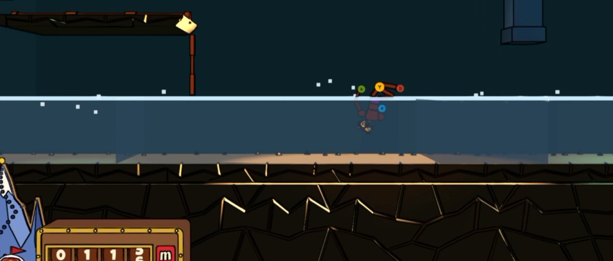
What is going on
The water is drawn straight from the rules, and the rules are boxes.
- One see-through box per rule. Every stretch with its own current is its own box: the flume, the tail pool, each still patch behind a pillar. Where two touch you see a seam. Where a still patch is laid over the river, two boxes overlap and you see a darker rectangle, as in the picture. Where a pool ends you see a flat glass end wall.
- The surface is a ruled strip 7 cm thick. It never moves.
- The specks are squares. The white flecks that show the current are plain square cards.
- Nothing pours. A waterfall is a separate pale slab with streaks on it, placed next to the pool. The pool does not bend over its lip into the fall, and the fall does not churn where it lands. Nothing that comes up out of the water sheds any.
The size of it: 14 stretches of water and 6 waterfalls, all in the mine and Las Aguas Negras. No other area has water today.
Plan
- Separate the look from the rules. Currents and still patches stay as they are, as invisible rules. The water you see is drawn once per connected body, from the joined outline of every stretch that touches. No seams, no overlaps, no end walls: water meets rock, or it goes over a lip.
- A surface that moves. A waterline with a gentle travelling ripple, a foam line where it meets walls, piles and barrels, and rings where something goes in (Del Mar's rings and splashes, note 2).
- A body with depth. Lighter near the surface, darker lower down, tinted to its cave. Whatever is under the surface is tinted by it, the way your climber is in the picture, but without box edges.
- Current you can read. Long soft streaks and foam lines that slide with the flow, faster where the current is faster, slow swirls in the still patches. They replace the square specks. Reading the current matters: two challenges are swims against it.
- Water that pours. At every lip the surface bends over the edge and becomes the fall, with broken white at the top, a sheet with moving streaks, and churn, mist and rings where it lands in the next pool. Thin spills where a channel overflows an edge.
- Things shed water. The mill wheel's paddles lift water and drop it. A barrel, a chain or a climber coming up out of the water drips for a moment.
- Del Mar is the style to match (your note 2): its foam circles, its pale splash blobs, its ink line.
How I'd run it
- One sample stretch first: the mill race of challenges 2.2 and 2.3. It has a wheel in it, a lip, a fall and a pool below, so it shows every part. You judge that from pictures and a short clip before anything is rolled out.
- Then the other 13 stretches and 5 falls, and the frame rate checked in Las Aguas Negras with all of it on.
- This also settles note 17 if the flashing turns out to be the water box, and it is where note 21's barrels and note 6's cart get their splashes.
Overtaken (the thread finished first): I asked whether to tell the thread to leave the surface alone. Before you answered, it finished note 2 as first written: splashes everywhere, and Del Mar's surface on the existing boxes (pictures under note 2). The splashes are kept. The surface work is the part this overhaul replaces. Nothing here has been sent to the thread.
Las Aguas Negras: the hot pipe joints show nothing of what they do
22:56"what is the deal with this? There is no visual for what is going on."
Plan, not sent to the thread
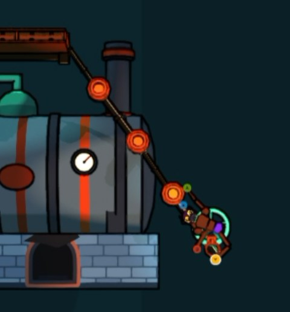
What the deal is
Challenge 2.9 is a climb through steam pipes. The round orange joints are hot. A hand or foot can hold one for 1.5 seconds, then it is let go, and that hand can't hold anything for the next 0.8 seconds. So you have to keep moving: grab, swing on, grab the next. The one joint at the very bottom, the one at the very top, and the three level pipes between are cool and safe to rest on. There are 11 hot joints. The cool pieces are painted red, the same red as the pipe in note 16, which sits close to the hot joints' orange.
You are right that nothing shows it. A hot joint is an orange disc that never changes. The only tell is a sizzle sound in the last half second, and then your hand lets go for no visible reason.
Plan
- At rest it should look hot. A slow pulse in its colour, a heat shimmer above it, a wisp of steam now and then. The cool joints get a plainly different look: dull grey-blue, no shimmer.
- While you hold it, you can watch the time run out. The joint brightens from orange through yellow to nearly white over the 1.5 seconds, and steam starts to curl off your hand and thickens. In the last half second it spits and your hand shakes, with the sizzle.
- When it lets go: a burst of steam, your hand is flicked off, and the hand smokes and stays red for the 0.8 seconds it can't hold. That shows both why you were dropped and why the hand won't take the next hold yet.
- Teach it once. A warning plate by the first hot joint, in the mine-sign style: a hand and a flame. A sign in the world, not a pop-up.
- No glowing materials: the house rule is no emissive, so "hot" is done with colour, shimmer and steam.
Added at 22:57
"make it so there is obvious effects and stuff for what is going on, we can use particle effects if we need it"
- Go big, not subtle. Everything in the plan above is turned up until it can't be missed from across the screen: thick steam off the hand, sparks spitting from the joint in the last half second, a real burst when it lets go.
- Particles are allowed (Parker). Steam, sparks and smoke are done as particle effects, in the toon-blob style of Del Mar's splashes so they match the rest of the game.
- The test for "obvious": someone who has never been told the rule should be able to say what happened after being dropped once.
The same rule elsewhere
Three kinds of hold on the mountain let go on a timer, and none of them shows it. Worth doing together so they speak the same language: 11 hot joints here; 9 hot holds in the chimney (area 6), which let go after 1.2 seconds; and 50 ice holds on the cableway and the glacier (areas 8 and 9), which let go after 2 seconds with only a tick and a crack to warn you. The ice ones would get the cold version: frost creeping, a crack spreading, then it lets go.
Las Aguas Negras: the catwalk before the dam should be mostly breakable floor
22:59"make this area out of mostly breakable floor. There is only one breakable thing here"
Plan, one thing to measure; not sent to the thread

What is going on
This is the walk between challenge 2.10 and the dam: 34 m of catwalk, 2 m above the river. It is five slabs of solid iron with three 1.3 m gaps, and one 2 m plank that breaks (the author called it "the plank that creaks"). So 2 m in 34 can break. It was written as a breather between two hard challenges.
The river under it runs east at 1.2 m a second, back toward the lip of La Cascada Chica. Fall in and don't get out, and you go back down the 15 m cascade you just climbed.
Plan
- Most of the catwalk breaks. About 70% of its length becomes breakable sections, each about 2 m long. A section shudders and creaks when you put weight on it, then drops into the river in pieces, and comes back about 8 seconds later.
- What stays solid: a short landing at each end (the top of the cascade and the dam's apron), and two short rest plates along the way, so there is somewhere to stop and look at what is ahead.
- The three gaps stay, so the crossing is a run of breakable stepping stones, not one long floor.
- You can tell them apart. Solid plates keep the red riveted iron. Breakable sections are rusted through and sagging, in the same breakable look as note 16's pipe sections, so that look means one thing everywhere.
- The falling pieces splash (note 2), and the returning sections come back in place (note 1's fix).
The dam: one elevator with its winch on board, in place of the five steps
23:00"replace this area with one elevator platform and the spiney which is attached to it so you have to stand in the elevator and spin the winch instead of all these steps"
Plan, not sent to the thread
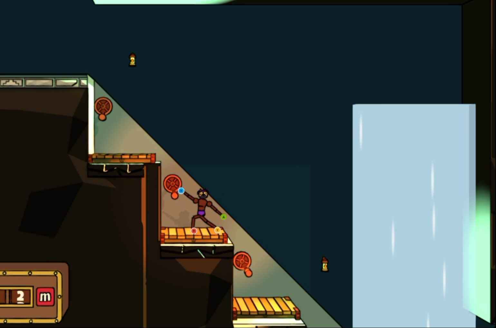
What is going on
The dam is climbed in five identical steps. On each step a plank lift rises 1 m while you wind the crank fixed to the wall beside it, and sinks when you stop. Then you climb 1.9 m up onto the next step and do it again. Five cranks, five lifts, about four turns each: the same small thing five times, and the crank stays behind on the wall while the lift moves away from it.
From the apron at the foot to the dam's crest is 14.8 m up and about 10 m across.
Plan
- One elevator, the whole way. A single platform that carries you from the apron to the crest. The five steps, lifts and wall cranks go.
- The winch rides with you. The crank is mounted on the platform itself, on a post at one end. You stand on the deck, take the handle and wind. While you wind it climbs; when you stop it sinks back.
- It runs up the dam's slope. The dam's face is already a slope with steps cut into it. I'd smooth the steps into one sloping face with a rail, and have the platform ride the rail like an inclined lift, its deck staying level. That keeps the dam looking like a dam and needs no new shaft cut into it.
- Numbers, first tries. Today a turn of the crank is worth 0.3 m. At that rate 14.8 m would be about 50 turns, which is too many. First try: 0.6 m a turn, about 25 turns to the top, and it sinks at 0.3 m a second when you let go, as the lifts do now. So a rest costs you height, and the higher you are the more a slip costs.
- It should look like it works: a chain or toothed rail that the winch visibly climbs, a pawl that clicks as you wind, and a creak and slide when it sinks.
- What has to be built: the crank has to turn on a thing that moves (today a crank can only be pinned to the rock), and the dam's face has to be reshaped. The kit's lift and crank models may do; the post and rail are new.
- Check: wind a climber from the bottom to the top without falling off; let go half way and see it sink; step off onto the crest at the top.
Added at 23:01: how the hand takes the winch
"it connects to the hand like the chair does, while you hold it not" ... "the whinch"
- The winch handle is gripped the way the folding chair is. In the arena, a hand that takes the chair is locked to it for as long as you keep holding that limb, and lets go when you release. The winch handle works the same: reach it with a hand, keep holding, and the hand is locked onto the handle so that circling the stick drives it round. Let go of the limb and the hand comes off the handle.
- This is different from every other hold on the mountain, where a hand sticks when you stop moving it. On a crank that rule fights you: the moment the hand sticks you can no longer steer it round. The chair's rule is the right one for something you turn.
- Your sentence stopped at "while you hold it not". I have read it as "it holds while you hold, not when you let go". Tell me if it was something else.
- The same grip would suit the other cranks on the mountain, if any stay after this note. Not changed unless you say.
La Gruta de Cristal: the hexagon steps should be pointed crystals jutting out of the back wall
23:03"replace these pointed at crystals with crystals that look like the circled ones, jutting out of the back wall"
Plan, needs models, one question; not sent to the thread
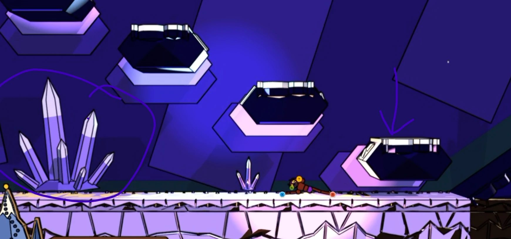
What is going on
Challenge 3.1, Primer Destello: six steps climbing west, each a fling of 2.7 m across and 2.2 m up to the next. Each step was written as a six-sided crystal column seen end-on, 3.4 m wide and 1.5 m tall: the idea was a crystal shaft coming straight out of the wall at you. Its top and shoulders can be held (the white cap); its under-faces are glass and can't (the dark part).
Seen end-on, a shaft shows no length and no point, so it reads as a dark six-sided pod with a white lid, floating. Nothing says "crystal", and nothing joins it to the wall. The circled cluster is a prop from the kit: pale lavender shafts with lighter tips, plainly crystals.
Plan
- Each of the six steps becomes a cluster of pale pointed crystals growing out of the back wall, in the circled cluster's shape, colour and ink: lavender shafts, lighter toward the tips, fanned out from a root on the wall.
- Rooted in the wall. Each cluster has a visible base where it breaks out of the back wall, with small shards round it, so it is clear what holds it up.
- What you hold has to be what you see. The part of the cluster that crosses your path is where its collision is. Glass under-faces stay dark and glossy so "can't hold this" still reads; the faces you can hold are the pale ones.
- New models. The kit's clusters are floor props that stand upright; these need to be made to grow sideways out of a wall and to fit each step. Six pieces (the sixth is wider). A job for the Building Maker, asked through the Top Dog session.
- The same hexagon-pod look is used for other crystal steps in this area. Once the first six are right, the rest of the cave should follow, when you have seen them.
La Gruta de Cristal: the floor flickers
23:03"the floor in here spazes out"
Suspects listed, not yet reproduced; not sent to the thread

What is going on
I have not seen it move. Suspects from the code, most likely first. Unlike note 17, the lanterns are not it: the three lanterns over this floor are steady.
- Your climber's own lamp. In the caves a warm yellow light rides with you, 0.6 m above the middle of your body. A crawling climber's middle wobbles with every limb, so the lamp wobbles too. The floor is only about a metre under it, and the toon shading cuts its light into a hard-edged patch. So a hard yellow patch jitters about on the floor right beside you. In the mine the floors are orange and wood, so warm light on them hardly shows. This floor is pale lavender and glossy, so the yellow patch stands out. The yellow blotches in the picture are the lamp's colour and lie within a few metres of the climber.
- Two surfaces in the same place. The floor's top wears a strip of fitted crystal ground laid along its edge. If that strip lies exactly in the plane of the floor block under it, the two flicker against each other as the camera moves.
- The glossy crystal finish. The shiny materials in this cave have a broad sheen that depends on the angle of the light. With a light that moves, a sheen can pop on and off across a flat face.
Plan
- Reproduce it at the start of challenge 3.1 with a climber crawling, and with one standing still. If it only happens while you move, it is the lamp.
- If it is the lamp: steady it. Have it follow you smoothly, not frame by frame, sit further out from the wall so its patch on the floor is wide and soft-edged, and perhaps take its colour from the cave (a cool white here) so it does not paint yellow on lavender.
- If it is the two surfaces: lift the ground strip a hair or cut the floor's top face away under it.
- This and note 17 are the same family: a light that changes, cut into hard bands on a flat floor. It is worth one pass over how the caves are lit, not two separate patches.
Look around with the right stick, or Alt and the mouse
23:04"make the right stick let you control the camera a bit line in Hallow Knight where you can look around with it and it returns to normal when you let go of it. Make it holding alt and useing the mouse on mouse and keyboard"
Plan, not sent to the thread
What is going on
Today you can't move the camera at all. It follows the climber and nothing else. On a pad the right stick does nothing, and on the keyboard the Alt key does nothing, so both are free. The mouse is in use: it is how a keyboard player aims the limb they are holding.
Plan
- Right stick looks. Push it and the view slides that way, further the harder you push. Let go and it glides back to the climber in about a quarter of a second. The climber does not move and nothing else changes.
- How far. A first try: up to about three quarters of a screen in any direction, so at the edge of the look your climber is still just in view on the opposite side. Far enough to see the landing of a long jump or the drop under you.
- Keyboard and mouse: hold Alt. While Alt is down, moving the mouse slides the view the same way and by the same limits. Let go of Alt and it glides back.
- The mouse can't do two jobs at once. While Alt is down the mouse stops aiming your limb: a limb you are holding stays exactly where it was. Without that, panning the view would drag your hand across the wall. Aiming picks up again when you let go of Alt.
- Smooth, not twitchy. The look eases in and out, and a stick that drifts a little does nothing (the same dead zone the left stick uses).
- Where it works: in the solo climb. The party modes share one camera between everyone, so one player's stick should not move it. Say if you want it there too.
- Alt and the right stick should appear on the controls card and be rebindable like the rest.
What this settles elsewhere
Note 7's open call was the nine long jumps that land out of frame now that the camera stays close. With a look-around you can check the landing before you jump, so the close camera can stay strict everywhere and those nine zones need no special case. I'd close that call this way unless you say otherwise.
La Gruta de Cristal: the geode should spin 50% faster
23:07"make this geode spin 50% faster"
Plan (one number), not sent to the thread

What is going on
The geode is a hollow wheel, 5 m across inside, with one gap. You get in through the gap, walk its inside as it turns, and leave by the gap when it comes round to the top, beside the spar that leads on. It turns twice a minute: one full turn takes 30 seconds, and from getting in to the gap reaching the top is a 22 second wait.
Plan
- Three turns a minute where it is two: 50% faster. One full turn takes 20 seconds, and the wait from getting in to the gap reaching the top drops from 22 seconds to about 15.
- The floor under your feet inside it moves at about 0.9 m a second where it was 0.6, so you have to walk a bit more briskly to stay at the bottom.
- It is one number in the area's file.
- Check: get in at the gap, ride it to the top and step out onto the spar, at the new speed.
La Gruta de Cristal: the needles you grab should be the pale purple crystals
23:10"make these grabbable crystals the purple crystals that look more like actual rocks like in the second screen shot"
Plan, needs models, one question; not sent to the thread
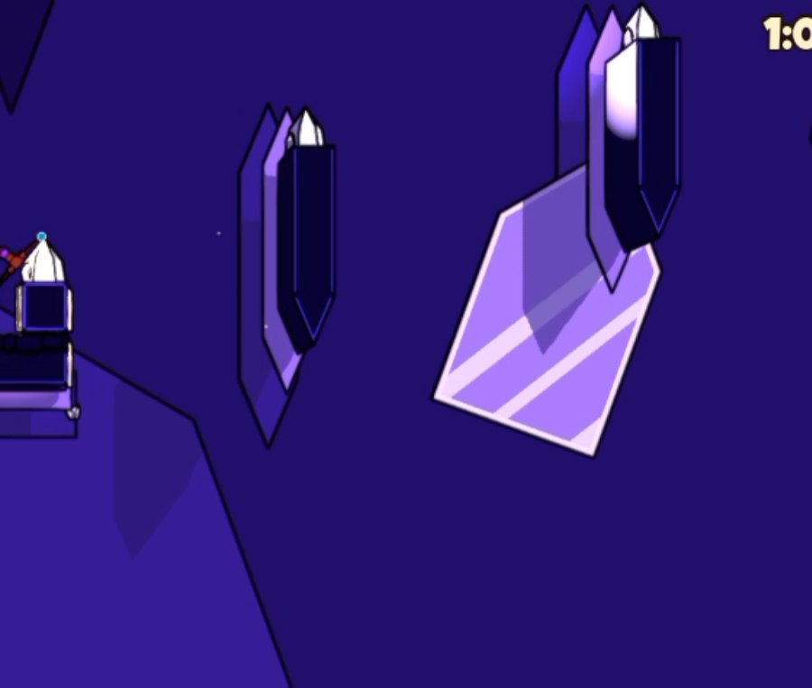
What is going on
Challenge 3.5: four needle spires, and three long flings from tip to tip, 7, 9 and 11 m. Each needle is a shaft of glass 1.1 m wide and up to 6.5 m long with a frosted point on top. Only the point, the top 1.3 m, can be held. The shaft is glass and slick.
The game draws "can't hold" as near-black glass and "can hold" as a white cap. So a needle is a tall black slab with a small white hat. It has the right outline for a crystal but none of the look: no colour, no facets, nothing that reads as stone.
This is the same complaint as note 26's steps. Both are the crystal cave's building pieces, and both come out as dark pods with white lids. The props in the same cave (the cluster you pictured) are drawn the way you want.
Plan
- Redraw the four needles as single shafts of the pale purple crystal: lavender, faceted, lighter toward the point, with the cluster's ink. Same size, same place, same point to hold, so the three flings play as now.
- Still tell the two parts apart, without black. The point you can hold is frosted and bright, as the cluster's tips are. The shaft you can't hold is the same lavender but glassy and smooth, with a sheen. Dark means nothing in this cave after that; frosted means hold, glassy means slide.
- Treat notes 26 and 30 as one job: restyle the crystal cave's building pieces to the cluster's look. The cave has 69 crystal pieces and 58 glass ones, all dressed from the same small set of kit parts, so changing that set changes the whole cave at once. A job for the Building Maker, asked through the Top Dog session.
- You have only seen the first five challenges of this cave so far. I'd restyle the set, show you these needles and note 26's steps as the sample, and roll it over the rest of the cave once you like it.
La Gruta de Cristal: the breaking shelves should look breakable, and last half a second longer
23:11"I think these are supposed to be breakable crystals, make that more obvious. Make them take .5 seconds longer to break"
Plan, not sent to the thread
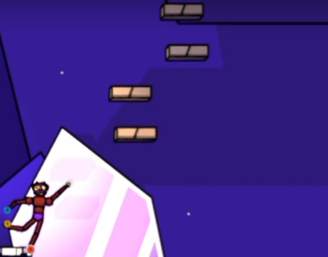
What is going on
You are right. Challenge 3.6 is eight small shelves up a 12 m diagonal, each 1 m wide. A shelf shatters 0.8 seconds after you take it and comes back 8 seconds later. It was meant as a sprint.
Nothing about them says so. They are drawn as plain tan blocks, like bricks, in a cave where nothing else is tan. There are no cracks, and nothing changes between taking one and it going.
One more thing I found: the design says each shelf chimes one note higher than the last, a rising scale as you climb. The eight notes were made and are in the game, but it picks one of them at random every time a shelf is taken. So the notes come in any order and never rise.
Plan
- Half a second longer: 1.3 seconds from taking a shelf to it shattering, where it is 0.8. For these eight shelves only. The same breaking kind is used in the temple, on the cliffs and at the summit, and those stay at 0.8 until you have played them.
- They look breakable before you touch them. Thin plates of pale crystal, a little see-through, already crazed with fine cracks and with a chipped corner. In the cave's purple, not tan, once notes 26 and 30 restyle the cave.
- You watch it go. From the moment you take one, the cracks spread across it and brighten over the 1.3 seconds, it trembles, and small chips start to fall. Then it bursts into shards with a puff of glitter, not boxes.
- You hear it go. A tinkle that rises as the cracks spread, and the rising scale the design asked for: each shelf plays its own note, one higher than the last, so the eight ring a full scale when you run them cleanly. The notes already exist; they only need playing in order.
- One breakable language for the whole mountain. This, the pipe sections of note 16 and the catwalk of note 24 should share the same tells: cracked at rest, trembling and cracking further once touched. Each in its own material.
- The returning shelf grows back in its own place (note 1's fix, already done).
La Gruta de Cristal: the little white block should be a tiny crystal bonsai tree
23:14"make this tiny crystal bonzai tree"
Plan, needs a model; not sent to the thread
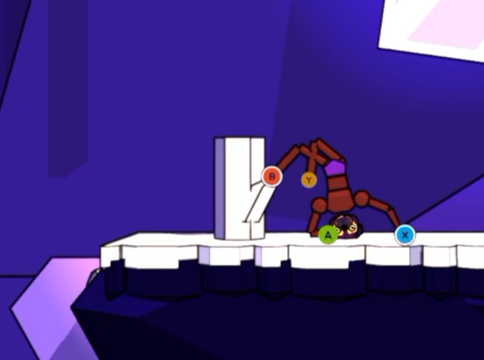
What is going on
I believe this is the block on the rest ledge after the quartz pendulum (challenge 3.7). The area's author called it "a broken stump" and put it there on purpose: it is 0.6 m wide and 1.2 m tall, and its job is to stop whatever tumbles in from the east from rolling on along the ledge. You can hold it. It is drawn as a bare white box because it is just a box of the cave's holdable crystal. If you mean a different block, tell me which.
Plan
- A tiny crystal bonsai in its place: a short twisted trunk of crystal with a few flat faceted pads for its crown, in the pale purple of the cave's crystals, about the same size as the block (a little over a metre tall).
- It keeps its job. It still stops what rolls along the ledge and can still be held. Its collision is cut to the tree's trunk and crown, so what you touch is what you see.
- A new model, small. A job for the Prop Maker, asked through the Top Dog session.
- If you like it, the same little tree could mark other rest ledges in this cave, as a sign that says "you can breathe here". Only if you say so.
La Gruta de Cristal: the flat ceiling crystals should be the same purple
23:14"make these flat ceiling crystals the purple of the other ones"
Plan (part of the cave's restyle), not sent to the thread
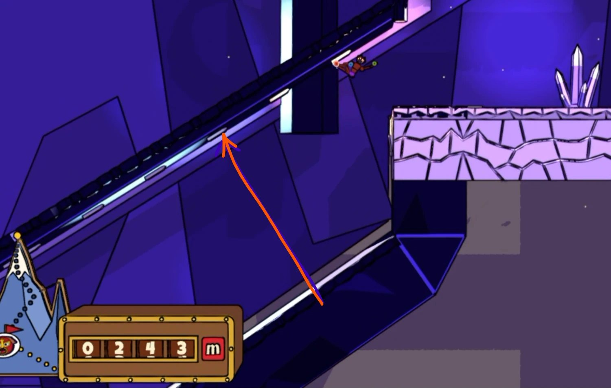
What is going on
Challenge 3.8 is a glass ceiling you cross hanging underneath it. The glass can't be held. Six flat patches on its underside can: you hang from one, swing, and catch the next, 2 to 3 m each time. Each patch is a thin plate 30 cm thick, drawn in the cave's "you can hold this" finish, which is plain white. Against a dark glass ceiling they read as white strips of tape, not crystal.
Plan
- The six patches become flat growths of the pale purple crystal: a low crust of small lavender facets clinging to the underside of the glass, lighter at their edges, in the same colour and ink as the clusters.
- Same size and place, so the swings play as now.
- This is the same job as notes 26 and 30: every "you can hold this" surface in the crystal cave is drawn plain white today. The same white strip is used for the frosted faces on the steps, the needles' sides, the mirror's edge and the landings. Restyling that one finish to the cluster's purple fixes all of them together.
- One thing to keep: the patches must still stand out from the glass at a glance, because finding them is the challenge. Pale purple on dark glass does that.
La Gruta de Cristal: the spikes on the column's rings should pop in and out
23:15"make the spikes on these pop in and out"
Plan, one question; not sent to the thread

What is going on
The column wears three rings, each 6 m across. The rings are glass and can't be held. The spikes are the only holds: four on the bottom ring, three on the middle, four on the top, eleven in all. The rings turn against each other (the middle one the other way and a little faster), and every 5 seconds a spike on one ring passes within 0.9 m of a spike on the next, like gear teeth. That is where you change rings. Today the spikes are fixed to their rings and never move.
Plan
- Each spike slides into its ring and back out, on a rhythm. When it is in, there is nothing to hold and nothing to bump into, and a hand that was on it is let go.
- A shake first. A spike trembles for about half a second before it goes in, and snaps out with a small ring of glitter and a click, so both moves can be seen and heard coming. (This is the in-and-out I first drew up for the wet holds in note 13, before you chose to keep those wet. It fits here.)
- First-try rhythm: out for 3 seconds, in for 1.5, with the spikes on one ring taking turns so two neighbours are never in together.
- The change of rings must stay possible. The two spikes that meet at each 5-second crossing have to be out at that moment, or the climb can't be done. I'd fix the rhythm to the rings' turning so that is always true, and check it with a climber.
- The spikes get the cave's pale purple with the rest (notes 26, 30, 33).
- The kit's ring models have their spikes built in, so the spikes need to become separate pieces. A small model change, through the Top Dog session.
El Jardín de Hongos: a weird static noise
23:17"the garden green place has weird static noise"
Likely cause found, not heard by me; not sent to the thread
What is going on
I can't hear the game, so this is from how the sounds were made. Every area has a background bed that loops every 12 seconds under the music. The mushroom garden's bed (amb_a4.wav) was built by a script, and its main layer is described in the sound list as random clicks pushed through high, ringing filters, meant as spores fizzing. Random clicks through high filters is very close to how you would make radio static on purpose. On top of that it has a few plops, three insect chirrs and a low room tone.
Two things make it stand out more than the other beds:
- The garden is the loudest of the areas so far. Its level is set 1 to 3 decibels above the mine, the black waters and the crystal cave.
- The crystal cave just before it has a soft, tuned bed (faint glassy tones). Walking from that into a fizz is a sharp change.
All of the Peak's sound was generated overnight and, as the showcase notes said, nobody had listened to it. The sound list itself flags the hissing sounds as weak.
Plan
- Confirm it first. Play
amb_a4.wavon its own. If that is the static, the cause is settled. If it is not, the next suspects are the garden's steady effects: the spore puffs and the updraughts' wind. - Rebuild the garden's bed without the fizz. A soft damp garden: slow drips, the plops, a few insect chirrs, a low breath of air, and something gentle and tuned to the music's key, as the crystal cave has.
- Bring its level down to sit with its neighbours.
- Dan is doing the audio pass. This may be his to replace with a real recording or his own bed. If so, the stopgap is simply to turn this one layer off until he does.
El Jardín de Hongos: the mushrooms need bounce animations
23:18"these mushrooms need to have bounce animations"
Plan, not sent to the thread
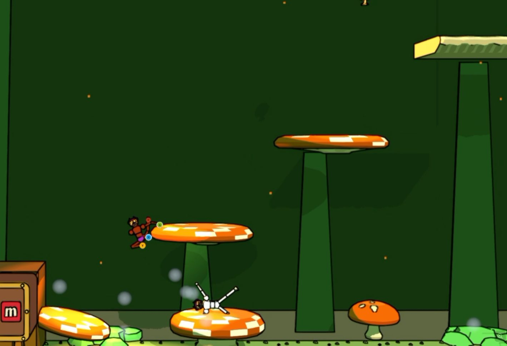
What is going on
The garden has 13 bouncy caps. When you land on one the game changes your speed (it throws you off along the cap's facing, from 3 up to 9.5 m a second depending on the cap) and plays a boing. That is all. The cap itself is a fixed piece of scenery and does not move, so you are thrown by something that looks as stiff as rock.
Plan
- Squash and spring. When you hit a cap it flattens and spreads under you, then springs up taller than it started and wobbles back to rest over about half a second. The stalk dips and rocks with it. Del Mar's floats already do exactly this, so it is the same recipe.
- Sized to the hit. A hard landing on a strong cap squashes deep and throws a puff of spores from under the rim. A light touch on a weak cap gives a small dip.
- Timed to the throw. You leave the cap on the spring back up, not at the instant you touch it, so the squash is what throws you and not something that happens after you have gone. A delay of a few hundredths of a second is enough; more than that would make the caps feel late.
- They look bouncy at rest too. A slow breathing sway on every bouncy cap, so you can tell a cap that throws you from a flat ledge before you land on it.
- For this each bouncy cap has to be its own moving piece. Today the caps are baked into the scenery with everything else.
- Note 15's life ring under the balcony is the same kind of bounce pad and gets the same squash.
El Jardín de Hongos: bouncy caps should look like the spotted mushrooms; push the scenery ones back
23:19"make the bouncy mushrooms look more like the background ones, insted of checkered. Also make the background mushrooms farther back so they look more like background mushrooms"
Plan, needs kit work; not sent to the thread
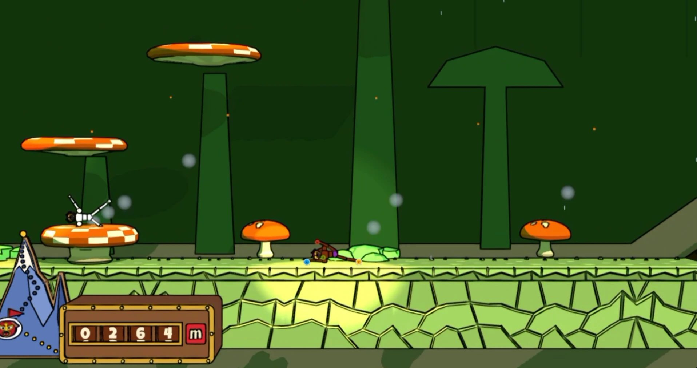
What is going on
There are two kinds of orange mushroom in the garden and they are the wrong way round for the eye.
- The 13 bouncy caps are built from the garden's building pieces: flat orange plates with a white check pattern, on plain green stalks. They look like tiles, not mushrooms.
- The 10 scenery mushrooms are proper models: a round orange cap with cream spots on a pale stalk. They can't be touched. But they stand only 1.6 to 2.8 m behind you, on the same floor, at full size and in full colour, so they look like the nearest and most real things in the frame. Your climber's body is over a metre deep, so the closest ones are almost touching it.
Plan
- The bouncy caps get the spotted look: a rounded orange cap with cream spots, gills underneath, a pale stalk. No checks. Every one of the 13 caps bounces, so the rule becomes simple: an orange spotted mushroom you can reach will throw you.
- Keep what you touch equal to what you see. The caps are flat-topped today. If they become domed, their collision and the line that throws you are reshaped to the dome, or the dome is kept low. The throws were laid out carefully, so each cap's throw is re-checked after.
- The scenery mushrooms go well back: from about 2 m behind you to 6 to 10 m behind. They are then smaller on screen, slide more slowly as the camera moves, and take the darker, greener tint of the far layers. A couple could go further still, among the dark shapes at the back.
- With both done, near and bright means "play on it", far and dim means "scenery". Note 36's breathing sway on the bouncy ones adds to that.
- Kit work. The check pattern is part of the garden's cap pieces, so this is a restyle of those pieces by the Building Maker, asked through the Top Dog session. Moving the scenery back is a change to ten lines in the area's file.
El Jardín de Hongos: the "low gravity" is an updraught with nothing to show it
23:22"if this area has low gravity or something, there is no indication of it"
Cause found (partly note 5's bug), plan; not sent to the thread

What is going on
It is not low gravity. It is challenge 4.3, El Ascensor de Esporas: a column of rising air 4.6 m wide and 15 m tall, starting at 277 m. In its lower half it pushes up harder than gravity pulls down, so you float upward. In its upper half it is weaker, so you sink slowly, as if gravity were a quarter of normal. You are meant to step in, ride it up, and catch the vines at the top. Step out of the column and you fall normally.
Two reasons nothing shows it:
- Its streaks are in the wrong place. This is the same bug as note 5. For a wind that blows up or down, the build you are playing turns the streak-maker on its side, so the streaks are scattered off to one side and slide sideways. Those are the white lines at the left of your picture. The thread has fixed that on the branch, and checked this very updraught, but the fix is not in tonight's build.
- Even in the right place it is too faint. A column this size gets only 8 thin white streaks. The design called it a spore updraught, but nothing about it says spores, and nothing marks where the column's edges are.
Plan
- A column you can see from across the screen. A thick stream of orange spores rising through it, dense at the bottom and thinning toward the top where the lift weakens. Its edges show as a soft shaft, so you know where to step in and where you will drop out.
- Something that makes it. A ring of puffing mushrooms or a vent at its foot, visibly blowing the spores up. An updraught with a source reads as a thing; one without reads as a glitch.
- It acts on what is in it. Loose spores and bits swirl upward, and your climber's limbs drift up when you are inside.
- Sound. A soft rushing that fades in as you enter the column and out as you leave.
- The stronger and weaker halves read differently: the spores rise fast in the lower half and slow in the upper, so you can see where the lift gives out.
- The garden has two more updraughts higher up (challenge 4.8), which come in gusts. They get the same look, plus a puff of warning before each gust. The chimney's updraught and the waterfall's draught in the mine use the same code and should be looked at with these.
El Jardín de Hongos: a tiny piece of mud on the ledge for no reason
23:23"tehre is a tiny piece of mud here for no reason"
Plan, settled: remove them all; not sent to the thread

What is going on
It was put there on purpose, by a rule. The design has a law, "Nowhere is quite safe": every rest ledge must have something small that keeps you from relaxing, such as a drip that slicks the lip, a gust, or a plank that creaks. The area authors were told to add one to each rest. The cheapest way to obey was a little patch of slime on the lip. This one is half a metre wide and 16 cm thick: a spot on the ledge's edge where a hand or foot won't hold.
Counting every slick piece this small, there are 19 on the mountain (a count by size, so one or two may be something else): 3 in Las Aguas Negras, 6 in the mushroom garden, 6 on the cableway, 4 on the storm ridge. Other areas obeyed the law in other ways.
As you saw, it doesn't work as intended. Nothing drips onto it and nothing explains it, so it does not make the ledge feel uneasy. It looks like a speck of dirt or a mistake.
Plan
- My recommendation: take all 19 out, and let the law be met only by things that read: a creak, a visible drip, a gust you can see coming.
- Or keep the idea and make it legible: a real drip falling from above onto the lip, with a small wet sheen where it lands, in the wet look that comes out of note 13.
- Either way, a rest ledge is the place you stop to breathe in a hard game. I'd rather the unease came from what is ahead than from a patch you can't see the reason for.
Settled (Parker): "remove them all they feel like bugs". All of the small slick lip patches come out, on every area. The rest ledges keep any creak or gust they have. No drips are added in their place.
Pieces in front of the screen hide the climber: most should go
23:28"these pieces in front of the screen, like in the crystal cavern too, most of them I think need to be romoved"
Plan, not sent to the thread
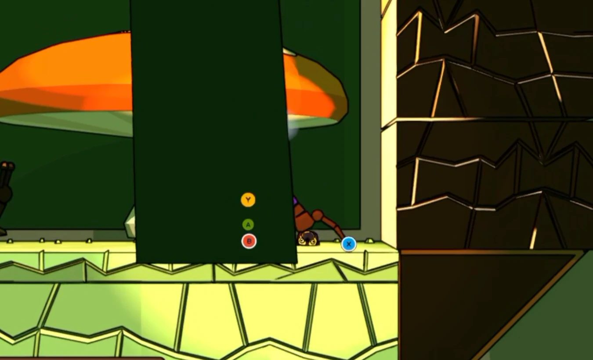
What is going on
The mountain is built like a paper theatre: flat painted layers behind the climb and, in places, in front of it, to give depth. The front layers stand 1.5 to 4 m nearer the camera than your climber, so whatever is behind one is hidden, your climber included. With the camera pulled far back, as it was written, a front layer was a small shape at the edge of a wide view. With the close camera of note 7 the same layer fills a third of the screen.
There are 35 front layers on the mountain:
| Area | Front layers | What they are, by size |
|---|---|---|
| 1, the mine | 2 | Two very large ones (46 m and 110 m long). Need a look: they may only cover rock. |
| 3, the crystal cave | 10 | Slabs 3 to 4 m wide and 5 to 7 m tall, standing through the climbing space. |
| 4, the mushroom garden | 2 | The 9 m by 16 m stalk in your picture, and one small strip. |
| 5, the temple | 1 | 17 m by 9 m. |
| 6, the chimney | 2 | Long low strips, 29 m and 55 m. |
| 9, the glacier | 10 | Small, 1.7 m by 3 m each. |
| 10, the storm ridge | 6 | About 10 m by 5 m each, probably cloud. |
| 11, the summit | 2 | Two very large ones, about 35 m by 30 m. |
Plan
- One rule: nothing may stand in front of a place the climber can be. Any front layer that crosses the climbing space is removed, or moved behind the climb if the scene looks bare without it.
- What may stay in front: layers that only ever cover solid rock, the ground below the lowest floor, or the far edges past the walls. They frame the picture without hiding anything you need.
- Going by that rule, I expect the ten in the crystal cave and the big stalk in the garden to go, since those are the ones you have met. The rest I'd check one by one against where a climber can reach, and show you a short keep list with a picture of each.
- The storm ridge's clouds are worth a separate thought when you get there: cloud drifting across you could be part of that area's difficulty. Not decided here.
- Check: after the pass, drop a climber at every challenge and confirm it is never covered.
El Jardín de Hongos: a little hut you can go into, with a frog in it
23:28"this area is cute, add a little hut here that you can go in. There will be a frog in it"
Plan, settled, needs models; not sent to the thread
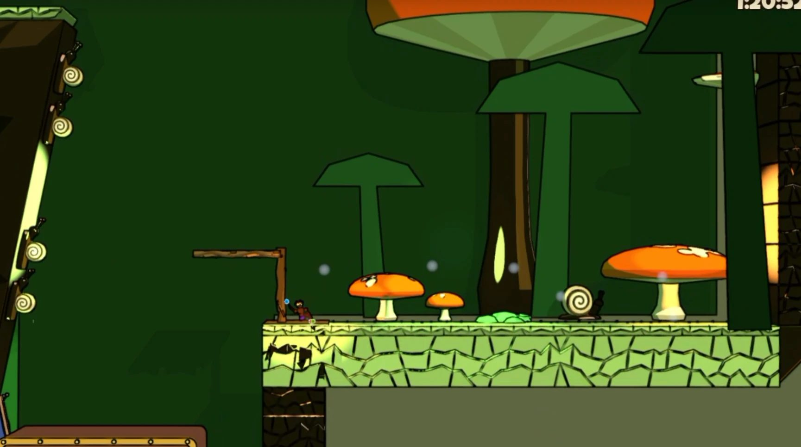
What is going on
I believe this is the long rest floor at 334 m, between the snail wall (challenge 4.5) and the giant mushroom (4.6). It is about 25 m of flat, safe ground, dressed with four spotted mushrooms and a snail, and nothing happens on it. It is the calmest spot in the garden, which is why it reads as cute.
Plan
- A small mushroom hut on the ledge: a fat stalk with a round door and a little window, under a spotted cap for a roof, a crooked chimney, a lantern by the door. Sized to the climber: a door you can crawl through and a room about 4 m wide inside.
- You can really go in. The doorway is open and the floor carries on inside. When your climber is inside, the hut's front wall lifts away so you can see the room and yourself. That keeps to note 40's rule that nothing stands in front of the climber.
- Inside: one small room. A stool, a shelf, a rug, a warm light, and the frog.
- The frog: a small round frog on a stool. It breathes, blinks, turns its eyes to follow you, and croaks now and then. A model of its own.
- Safe. Nothing in the hut can hurt you or cost you height. It is a place to stop.
- Models: the hut (outside and inside) and the frog are new. Jobs for the Building Maker and the Prop Maker, asked through the Top Dog session.
- Where exactly on the ledge is open. I'd put it toward the middle, clear of the way on to the giant mushroom, so it is a detour you choose.
Settled (Parker): "the frog is just a friendly thing for now". It lives in the hut and does nothing else yet.
El Jardín de Hongos: the giant mushroom looks like cardboard and is hard to read
23:31"why is this mushroom made of cardboard? Idk what id going on with this, make this better"
Plan, needs a model; not sent to the thread
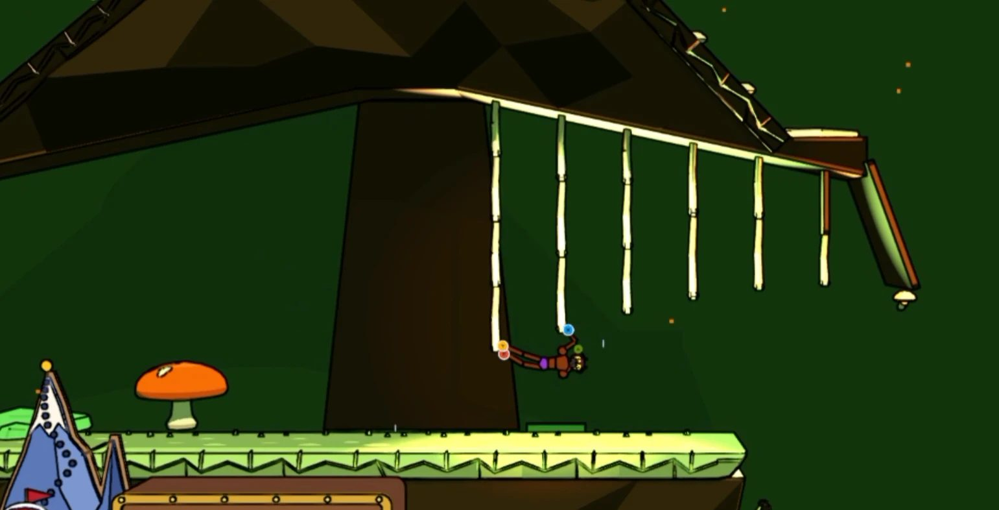
What is going on
Why cardboard. The giant mushroom's cap is a one-off shape, 19 m across, drawn by the area's author as an outline. The game dresses the mountain from a kit of building pieces, and no piece fits a shape like this. When nothing fits, it falls back to its plainest drawing: the outline cut into rough brown facets, which is its stand-in for bare rock. So the biggest mushroom in the garden is drawn as a brown rock roof. Its stalk is not even a model: it is a flat dark card behind you, put there so it would not wall the ledge in two.
The other huge cap in this area, higher up, did get a model made to its outline by the Building Maker. This one was missed.
What you are meant to do, since nothing tells you: only three things on the mushroom can be held. The cream gills hanging under the east half, the pale brim at the east rim, and five warts up its shoulder. Everything else is slime. You go hand over hand out along the six gills, 1.4 m apart, to a knot on the end of a strand of slime that hangs just outside the rim. Swing on the knot, let go on the way up, and you come round the rim and land on the brim. Then up the five warts to the dry crown on top.
Plan
- A real giant mushroom, made to this outline the way the great cap was: a broad orange cap in the spotted look of note 37, a thick pale stalk as a proper model set behind the climb, and a pale underside.
- Slime that looks like slime. The cap is slick everywhere except its three holds. It should glisten, with slow drips off the rim and a wet green-yellow sheen, so "this will not hold you" is plain without it being brown.
- The three things you can hold stand out: the gills as a row of real cream gill plates under the cap, the brim as a dry pale lip, the warts as dry cream bumps. All three in one dry, pale finish against the wet cap, so the route reads as a line of pale things.
- The knot and its strand get a look of their own: a fat drip of slime with a firm bead on its end, clearly the thing to swing from.
- Show the way once. The fling round the rim is not something you would guess. One of the frozen climbers placed mid-swing on the knot, or reaching for the brim, shows it without a word.
- The model is a job for the Building Maker, asked through the Top Dog session. The collision stays as it is, so the challenge plays the same.
Hold the left trigger on a controller, or Shift on the keyboard, to zoom the camera out
23:31"make holding L on controller zoom the camera out and make it holding shift on keyboard and mouse"
Plan, not sent to the thread
What is going on
There is no zoom today. On a pad the left bumper and the left trigger both do nothing, and on the keyboard Shift does nothing, so all three are free. (The right bumper is taken.)
Plan
- Hold to zoom out, let go to come back. While the button is held the camera pulls back smoothly over about a third of a second. Let go and it eases back in. Your climber keeps playing as normal while you hold it.
- Which L: the left trigger (Parker confirmed: "left trigger"). It counts as held once it is pulled about half way, so a resting finger does not zoom.
- How far. The course already holds a wide view for every one of the 111 challenges: the frame its author drew to show the launch, the landing and the fall below. Note 7 stopped the camera using those because they were too far out to play in. Holding the trigger can show exactly that frame. So in every challenge the zoom-out shows you the whole problem, as it was designed to be seen. Where a spot has no such frame, it doubles the view.
- It works with note 28's look-around. Zoomed out, the right stick (or Alt and the mouse) still slides the view.
- Solo climb only, like the look-around, unless you want it in the party modes.
- It goes on the controls card and can be rebound like the other buttons.
What this settles elsewhere
Together with note 28 this closes note 7's question about the nine long jumps: the normal view stays close, and when you want to see where a jump lands you hold the left trigger (or Shift) or look that way.
The giant mushroom's shoulder: only 2 little mushrooms, so it is harder
23:33"make these little mushrooms have only 2 of them so it's harder"
Plan, one thing to check; not sent to the thread

What is going on
These are the "warts": five small holds up the giant mushroom's shoulder, from the brim where you land to the dry crown on top. The shoulder is 8.6 m of slime at 46 degrees, so the five holds are the only things on it. They are 1.5 m apart, which is an easy reach each time: a ladder.
Plan
- Two holds where there are five. First try: keep the second and the fourth and take out the other three. That makes three gaps of about 2.8, 3.0 and 2.8 m: brim to first, first to second, second to crown.
- What that does to the climb. A climber's reach is about 2.1 m, so none of the three gaps can be reached any more. Each becomes a short swing and lunge up the slope from one hold to the next, with slime under you the whole way. Miss and you slide back down the shoulder and off the rim.
- One thing to check before it is set. Each lunge is about 2 m across and 2 m up, which is right at the top of the easiest fling the course uses. The course's own reach check and a climber on the slope will say whether all three can be made. If one can't, the two holds are nudged until they can. Harder is the aim; impossible is not.
- The frozen climber of note 42 could move here to show the lunge.
El Jardín de Hongos: the dark place is far too dark, and the light must fade, not snap
23:34"its way too dark in here, it can be a little dim but not this and the lighting needs to fade between the places"
Cause found, plan; not sent to the thread
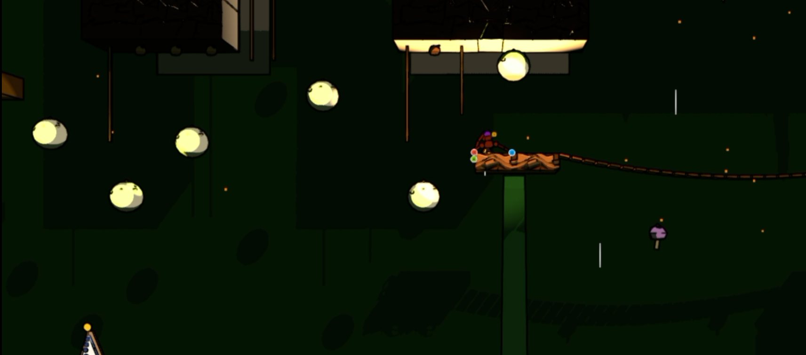
What is going on
Challenge 4.9 is a traverse under a ceiling between puffballs that burst and throw you when touched. Its author marked a box round it, 20 m by 18 m, as a "dark" place at strength 0.85 out of 1.
- Too dark: at 0.85 the game cuts the garden's main light to under half and its fill light to about a third, and turns the background nearly black. The garden is already a dim cave, so that leaves almost nothing. The holds, the ceiling and the drop can't be read.
- It snaps: the dark is all or nothing. The moment your climber comes within 2 m of the box, the full darkness is applied in one frame, and it lifts in one frame when you leave. The change from one area to the next does fade (over 14 m, and smoothed in time), but these dark boxes were never given the same treatment.
There are three dark places on the mountain: this one, the cart tunnel at the very start (nearly as strong, 0.8), and a mild one on the glacier (0.3).
Plan
- "A little dim." First try for this place: about half the strength it has now, so it is plainly darker than the garden round it but the ceiling, the holds and your climber all read. A number for you to judge from a picture.
- Let the puffballs do the lighting. They are called the eyes. Each one casts a soft pale pool of light around itself, so the dark is where they are not and the route is drawn in light. When one bursts, its light goes out until it grows back.
- Fade in space and in time. The dark deepens gradually over the last 6 to 8 m as you approach, and any change is smoothed over about a second, so there is never a snap, even when you fall or are thrown through the edge of the box.
- A ceiling on how dark anything gets. No dark place anywhere on the mountain may go below the level where the climber and the holds can be read. The cart tunnel at the start gets the same fade and the same ceiling.
- This belongs with notes 17 and 27: one pass over how the caves are lit.
El Jardín de Hongos: the great cap at the well does not look like a mushroom
23:37"if this is a mushroom, fix it to actually not be shit"
Plan, needs a model; not sent to the thread
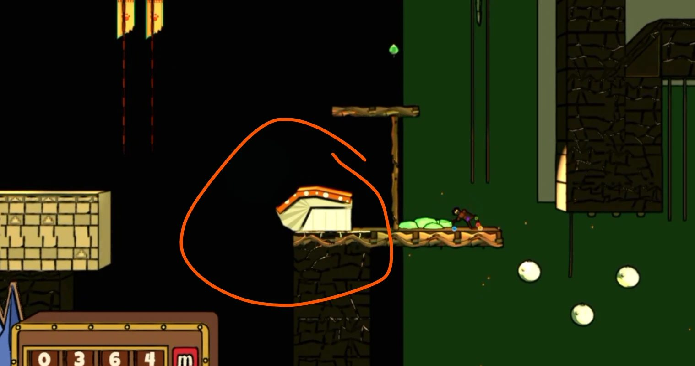
What is going on
It is a mushroom, and an important one. This is challenge 4.10, El Salto del Pozo II, the hardest in the garden. You climb the post, walk out on the board above, and drop onto this cap. It is the great springy cap on the rim of the well: it throws you 12 m out over the well, and you catch the temple's two banner chains in the air (the banners at the top left of your picture).
Why it looks like that: the throw was worked out very exactly, so the cap's top is three flat faces at set angles, a tilted middle and two flanks. The model was made to that outline and nothing more. So it came out as a cream wedge about 4 m wide with an orange band, sitting on the corner of a rock pillar with no stalk. It follows the numbers and looks like a doorstop.
Plan
- A real mushroom, and the grandest one in the garden. A broad spotted cap (note 37's look) on a short thick stalk that grows out of the rim and leans over the well, with gills under it and a fat rounded edge.
- Keep the throw. Only the top surface matters to the jump. The new cap keeps the same tilt where you land, and everything else about its shape is free. The 12 m throw is checked again afterwards.
- It looks like a springboard. Bigger and brighter than the other caps, with the deep squash and spring of note 36 when you land on it, since this is the one jump of the area.
- The well beside it. In your picture the well is flat black with nothing in it. Before a 12 m leap you should be able to see across: the far rim, the two banner chains you are aiming for, and some depth going down. That may be the dark place of note 45 still applied here, or the well may simply have nothing drawn in it. To check when this is looked at.
- The model is a job for the Building Maker, asked through the Top Dog session.
El Templo: the climber goes behind the great mask
23:39"you should not be behind this part"
Cause found, plan; not sent to the thread
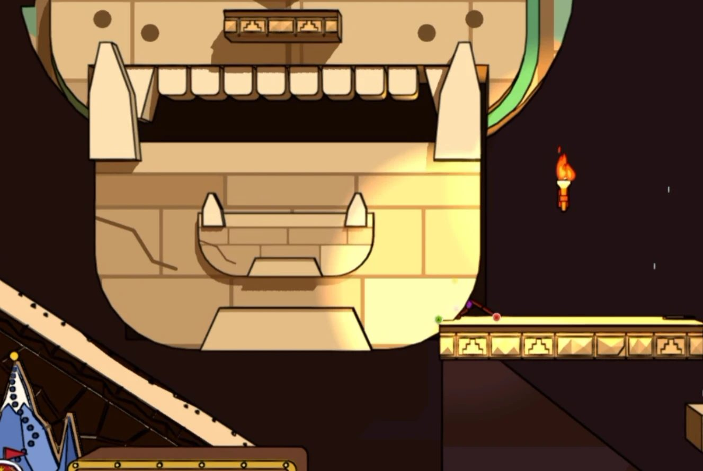
What is going on
The mask was modelled 10 m tall and 2 m deep. The area asks for it at 21 m, so the game enlarges it a little over two times in every direction, depth included. That makes it about 4 m deep. It was placed 1.2 m behind you on the assumption that it was 2 m deep, so at its real size its front face comes out about 0.9 m in front of your climber. Wherever you overlap the mask you are inside the stone or behind its carving.
The jaw is worse. It is the lift you ride up the face, and its model sticks out a full metre in front of where you stand. So while you ride it, the jaw's front lip is between you and the camera. The jaw's model also hangs 0.9 m lower than the part you can stand on (found in the check under note 3).
Plan
- Set the mask back so its whole front face is well behind your climber: about 2 m further back than it is now, or made shallower. The things you hold on it (the teeth, the nostrils, the cheekbones, the eye rims, the brow) are separate pieces at your depth, so they stay where they are and still read as parts of the face.
- Fix the jaw so you ride on it, not in it. Its front is cut back to behind you, or lowered to below your feet, and the model is lined up with what you stand on.
- Widen note 40's rule to cover models. Note 40 said no flat layer may stand in front of where the climber can be. The same goes for any model: props and moving pieces placed so close behind you that their fronts poke through. That wants one sweep over the mountain, comparing every model's front face with the climber's depth, the way note 3's check compared collisions.
- Check: a climber on the jaw at the bottom and the top of its ride, and one at every hold on the face, never covered.
Added at 23:40: what you can hold on it
"this whole thing needs to kinda be fixed as far as what you can connect with. But it looks great other than interacting with it"
Why it doesn't connect. The mask was built from two sides that never met. The area's author laid out the climb as a list of small shapes in the air: a lip, three teeth, two nostrils, two cheekbones, two eye rims, a brow. Separately, a carved mask was modelled, 10 m tall, with its own teeth, fangs, nose and eyes. The game then enlarges that model to the 21 m the author asked for. Nothing lines the two up. So the teeth and eyes you see carved on the face are not the things you can hold, and the things you can hold are small blocks sitting somewhere else on the face.
- Keep the mask exactly as it looks, since you like it. Fit the play to the carving, not the other way round.
- The carved features become the holds. The teeth you see are the teeth you hold. The same for the fangs, the lip, the nostrils, the eye sockets and the brow ridge. Their collisions are cut from the model's own shapes, and the author's stand-in blocks are removed.
- Smooth stone is not a hold. The flat cheeks and forehead stay unholdable, so the route is the features.
- The jaw the same way: what you stand on is the jaw you see, lined up, with its fangs where they are drawn.
- Then re-lay the route. With the features where the carving puts them, each reach from one to the next is measured again. If a gap is too far, the answer is one more carved detail on the face (a crack, a stud, an earring), not an invisible block.
- This needs the Building Maker to give the outlines of the mask's features, asked through the Top Dog session.
- It is note 3's lesson again, at the largest size so far: what you see has to be what you touch.
El Templo: the piston shaft flickers at the walls, and its walls can be climbed
23:41"these things are z fighting the walls and this area should not let you climb the walls, you should only be able to grab the platforms that are moving back and forth"
Likely cause found (one cause for both), plan; not sent to the thread

What is going on
The shaft has nine stone pistons, alternating walls, 1.2 m apart in height. Each slides 3.2 m out of its wall, stays out 4 seconds, slides back and stays in 4 seconds. They are your steps, and the one above shoves you off if you are slow.
I believe both of your complaints come from one thing: when a piston is in, its end sits exactly flush with the wall's face.
- The flicker. The end of the piston and the surface of the wall are in the same place, so the two fight over which is drawn. That is the flickering plate at your arrow. There is one on the wall for every piston that is in.
- Climbing the walls. The walls themselves are set as slick in the course file: by the rules you can't hold them. But a piston is holdable stone, and its end is right at the wall's surface, so a hand on the wall there takes hold of the piston's end. Each wall has such a patch, 0.9 m tall, every 2.4 m. That is a ladder up each wall, and it lets you skip the timing altogether.
I have read this from the numbers and not tried it. If you were holding plain wall between the pistons, tell me, because then there is a second cause.
Plan
- Pull the pistons right into the wall when they are in, a third of a metre past the surface. Nothing is flush any more, so the flicker stops and there is nothing at the surface to hold.
- A piston can only be held once it is out. While it is inside the wall, or still within its first few centimetres, it can't be grabbed. Belt and braces with the point above.
- Show where each one lives. A dark square socket in the wall for every piston, with a carved stone frame. You can then read the whole pattern of the shaft before you start, and a socket with nothing in it is plainly not a hold.
- The walls read as unholdable. They are slick by rule, but in your picture they are drawn as pale dry stone like everything you can hold. They should look polished, wet or greased, in the temple's own style.
- Check: a climber pressed to each wall between and on the sockets holds nothing; the nine pistons can still be climbed in time.
Added at 23:42
"when it goes into a wall and your hand is on it, it should not let you still be grabbed on"
- Today a hand that is on a piston stays stuck to it as it slides back, and is dragged into the wall with it. You end up held against the wall by a hand that is inside the stone.
- The wall wipes you off. As a piston goes in, any hand or foot on the part that is passing into the wall is let go at the wall's face. A hand further out along the piston keeps its hold until that part reaches the wall too. So you can ride a retracting piston toward the wall, but you can't be carried into it.
- You can see it coming. A piston gives a short grind and a puff of dust at its socket just before it starts back, so being wiped off is your mistake, not a surprise.
- This is the same rule in general: a hold that disappears into something lets go of you. It applies wherever a moving piece slides into a wall: the three steps at the temple's door (challenge 5.1) do the same thing.
El Templo: the gear section is way too easy
23:43"this whole gear section is way too easy, make it harder"
Plan with a first try; Parker to pick; not sent to the thread
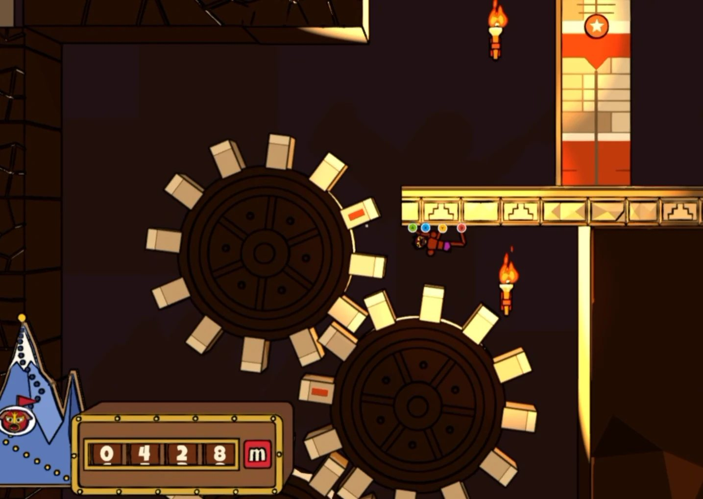
What is going on
Four gears zigzag up the room, each about 6 m across and turning against the one below. The disc of each gear is greased and can't be held. All twelve teeth on every gear can. The gears turn slowly: one turn takes 24 seconds, so a tooth moves at about 0.7 m a second.
Why it is easy:
- There is always a tooth. Twelve holdable teeth a gear means one comes past every 2 seconds, and the next is never more than a short reach away.
- It is slow. You can hang on a tooth and be carried three quarters of the way round with time to spare.
- Nothing bites. The design says to change gears before the mesh, "where the teeth close". But where the teeth close nothing happens to you. They are just solid blocks passing each other.
Plan: ways to make it harder
- Fewer teeth that hold. Only four of the twelve teeth on each gear are dry stone you can hold. The other eight are greased like the disc and look it. You have to wait for a dry tooth, and when changing gears, time it so a dry tooth on the next gear is arriving.
- Faster. Half again as fast: a turn in 16 seconds.
- The mesh bites. If you are still on a tooth when it goes into the mesh, the closing teeth knock you off and out for a moment, with a crunch. The design already promised this.
- The train changes direction. Every so often the whole set grinds to a stop and runs the other way, with a second of warning groan. Whatever was carrying you up now carries you down.
My first try would be 1, 2 and 3 together. They make it a timing puzzle with a real penalty, and all three are small changes. Number 4 is the cruel one; I'd add it only if the first three are not enough.
- Whatever is chosen, the reaches between gears are measured again at the new speed, so it is hard but can be done.
- The greased teeth must look different from the dry ones at a glance: dark and shiny against pale and dry.
El Templo: of the three swinging censers, keep only the middle one
23:45"remove the middle one of these"
"sorry remove both but the middle one. So only the middle is left"
Plan, settled; one thing to check; not sent to the thread

What is going on
Three censers hang 4.5 m apart and step up from the last champion statue toward the east balcony. Each swings 1.6 m to either side, at different speeds, and their chains can be held. Today you drop onto the first from the statue's arm, then reach from one to the next as they swing together, a gap that closes to about 1.3 m, and step off the third onto the balcony.
Plan
- The first and the third censers go. Only the middle one is left, swinging 1.6 m either side, once every 5 seconds.
- What that does. The crossing becomes two long flings with one moving thing between them:
- From the champion's arm to the censer: about 7.3 m across when the censer swings nearest, and a little upward.
- From the censer to the balcony: about 5.6 m across when it swings nearest that side, and 1.6 m up.
- Both have to be timed to the swing: you leave when the censer is coming toward you, and you leave it at the far end of its swing toward the balcony.
- One thing to check before it is called done. The first fling is at the long end of what the course asks for in this hall (the statue-to-statue flings before it are 6 to 8 m), and it lands on a chain that is moving. It has to be tried with a climber. If it can't be made, the censer is hung half a metre nearer the statue or given a wider swing. Harder, not impossible.
- A miss here drops you to the foot of the ramp and the drain, as now.
Weird black spots: places where the painted back wall stops
23:46"another one of those weird black spots here"
Likely cause found, plan; not sent to the thread

What is going on
The inside of the mountain is painted on flat layers standing behind the climb. Where a layer stops and nothing lighter is behind it, you see whatever is further back, and in the temple that is close to black.
Here the black band is 3 m wide and sits exactly where the hall's painted far wall ends. That wall was drawn stopping at the west edge of this balcony, 3 m short of the stone wall on the right. The strip between is the shaft with the chain you climb next, and nothing was painted behind it. I have not confirmed in the running game which layer the black is, but its edges match that gap to within a few centimetres.
The black to the left of the great cap in note 46 is the same kind of thing, only bigger: the well between the garden and the temple has no layer behind it at all, so the whole well is the cave's black.
Plan
- Here: carry the hall's far wall across behind the shaft to the stone wall, so the balcony and the chain have the same dim wall behind them as the rest of the hall.
- Find them all at once. A check over every area that asks, for each place a climber can be, "is there a painted layer behind this spot, and how dark is it?" It lists every gap. That is quicker and surer than waiting for you to meet each one.
- Then fill each gap, or, where the dark is meant (the well, a shaft dropping away), make it look meant: layers stepping back into the depth, a far glint, so it reads as a deep space and not as a missing piece.
- This fits with the lighting pass (notes 17, 27, 45): the same rule there, that nothing you need to see may fall to plain black.
The insides of small pits should not be grabbable
23:47"make the insides of little pitfalls like this not grabbable so pits are actually an issue"
Plan, not sent to the thread

What is going on
This is the gallery, the walk over the champions' heads. Its author put two slots in the floor, each a step wide, and wrote that falling through one "costs the whole temple". But the floor is holdable stone, and in this game a block of stone can be held on every face, its sides included. So if you drop into a slot, your hands and feet stick to its walls on the way down and you climb straight back out. The pit can't hurt you.
The same is true of any narrow gap between two blocks you can hold, anywhere on the mountain.
Plan
- These two slots: line both inner faces, top to bottom, with a surface that can't be held. Fall in and you go through.
- The top edge stays fair. The floor's top surface, right up to the lip, can still be held, so a hand that catches the rim saves you. Only the inside walls below the lip are slick.
- It must look like it. The slick faces are drawn as polished or worn-smooth stone, clearly different from the rough floor, and for the whole height of the slot. Not a small odd patch, which is what read as a bug in note 39.
- Every other pit. A check over the whole mountain can find them: any gap up to about 2 m wide between two holdable blocks, with a real drop under it. Each one found gets the same lining. I'd show you the list before changing them, since a few gaps may be meant as places to wedge and rest.
El Templo, the altar: the whole beam breaks, and the cross spins four times as fast
23:49"make this whole platform break"
"make the thing spin 4x as fast"
Plan, one thing to check; not sent to the thread
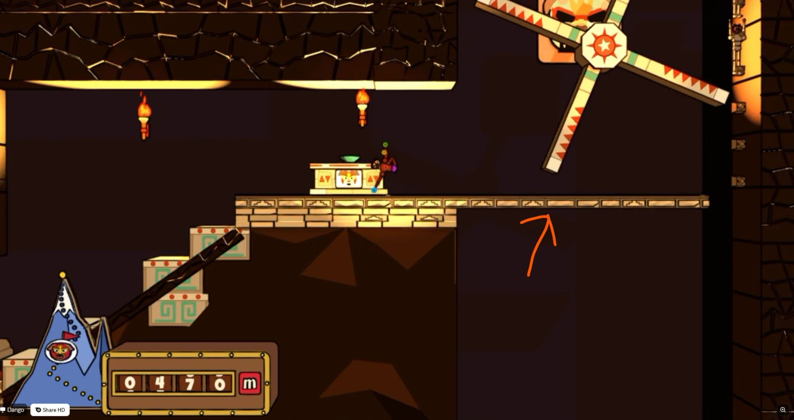
What is going on
The altar's chamber has no floor. A single stone beam, 9 m long, crosses it, and under the beam is the gallery 16 m down. Above the beam a stone cross 10 m across turns slowly: once every 37 seconds, so an arm comes past every 9 seconds. Its arms sweep half a metre over the middle of the beam and then brush up the east wall, which you climb next. The idea was to walk across behind an arm and follow it up the wall.
Two things make it tame today. The beam is plain solid stone, so you can stand on it as long as you like. And the cross is so slow that an arm sweeping into you does nothing: the game knocks you out when the arm is moving at 2 m a second or more where it touches you, and the fastest point on these arms moves at under 1. Today it only knocks you out if you yourself are moving fast when you meet it.
Plan
- The whole beam breaks. All 9 m of it, in sections of about 1.5 m. A section gives way a moment after you put weight on it and drops to the gallery in pieces, so the beam falls away behind you as you cross. It comes back a section at a time after its usual wait, so you can try again. It looks cracked and crumbling before you step on it, in the same breakable language as notes 16, 24 and 31.
- The cross turns four times as fast: once every 9 seconds, an arm past every 2.3 seconds. The tip of an arm then moves at about 3.4 m a second.
- At that speed it bites. The outer 2 m of each arm is now moving fast enough to knock you out on contact, with no change to the rule. Near the hub it is still slow.
- How the two fit. The arms pass half a metre above the beam, so a climber who stays low can go under them, and a climber who stands up is hit. The beam breaking means you can't wait for a gap. So: cross low and keep moving.
An achievement for farting at the altar: "Pay Your Respects"
23:50"make an achievement at this alter where if you fart, you get an achievement called "pay your respects""
Plan (the game has no achievements yet); not sent to the thread
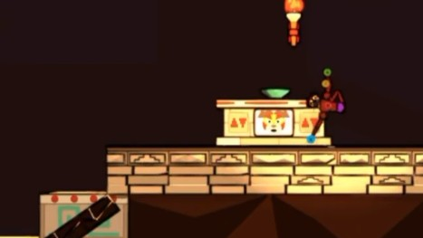
What is going on
- The game has no achievements at all yet. Nothing in the code records, shows or sends one. This would be the first.
- Steam can't take it yet. The game still runs on Steam's shared test app, which has no achievements of ours. Real Steam achievements need the game's own Steam app, with each one set up on Steam's side.
- The fart is controller only. It is on the right bumper. There is no key for it on the keyboard, so a keyboard player could never earn this.
- The altar is a prop standing 1.2 m behind you at the west end of the beam. There is a second, smaller one higher up by the well (the sacrifice stone).
Plan
- The achievement: "Pay Your Respects". Fart while your climber is at this altar, within about 2 m of it. Earned once, kept for good.
- A small achievements system to carry it, since there is none: a list the game keeps in your save, and a way to award one. Built so each achievement is one line, because more will follow.
- The moment it pops: a lucha-style ribbon drops in with the name and a short fanfare, in the game's own 3D look. That part is mine as the UI director. The altar's bowl could puff a little smoke in answer.
- Steam, later: when the game has its own Steam app, the same list is wired to Steam's achievements, and anything already earned is handed over the first time you start.
- A fart key on the keyboard, so everyone can earn it. F is free, if you like the joke.
- A place to see what you have earned (a page on the title screen) can come with it or after.
The area name banner: a 15 second cool-down before it can show again
23:51"make it so once an area gives you it's name banner, there is a 15 second cool down before the banner can show again"
Plan, not sent to the thread
What is going on
The banner is shown every time the game decides you have changed area, in either direction, with no memory of what it just showed. Areas meet at an invisible line. Hang about on that line, or get thrown back and forth across it, and the game flips between the two areas each time you cross, and the banner fires each time. And one is held back: if another banner is asked for while one is on screen, the latest is kept and plays the moment the first is done. So on a border you get banner after banner with no gap. A long fall through several areas does the same.
Plan
- 15 seconds of quiet. Once a banner has shown, no banner can show again for 15 seconds, whatever lines you cross in that time.
- Nothing queues. Banners asked for during the quiet time are dropped, not saved up.
- You still find out where you are. When the 15 seconds end, if you have settled in a different area from the one last announced, its banner shows once then. So a real arrival is never missed, only delayed, and a fall through three areas gives you one banner for where you land.
- Not while you are falling. The banner waits until you have hold of something again, so it does not drop across the screen in the middle of a fall.
- This is in the solo HUD, which is my code, and it is a small change.
La Chimenea: the hot holds show nothing and give no warning
23:52"these have no indication of what is going on and no leading indicator"
Plan (same job as note 23); not sent to the thread

What is going on
Challenge 6.2 is a 10 m wall of hot rock with twelve holds. Nine are hot: a hand or foot can stay on one for 1.2 seconds, then it is let go and can't hold anything for 0.8 seconds. Three are cool, and those are the rests. It is the same rule as the hot pipe joints of note 23, a little quicker.
As there, nothing shows it. A hot hold is a small red knob on a red wall, so it barely shows at all. It does not change while you hold it. The only warning is a sizzle sound half a second before your hand is thrown off. The cool holds are pale, which helps, but nothing says why they are different.
Plan
- The same treatment as note 23, turned up, as you asked there: obvious effects, particles allowed.
- Before you touch it: a hot hold burns bright and pulses against the wall (done with colour, since the house rule is no glowing materials), with heat shimmer and the odd spark, so the nine read as hot and stand out from the wall behind them.
- The leading indicator, while you hold it: the hold brightens from red to yellow to white over the 1.2 seconds, and smoke builds off your hand. In the last half second it spits sparks and your hand shakes, with the sizzle. You can watch the time run out.
- When it lets go: a burst of sparks and smoke, and the hand glows red and smokes for the 0.8 seconds it can't hold.
- The three cool holds look like relief: dark, damp stone with a wisp of steam, plainly not hot.
- Contrast. A red hold on a red wall is the root of it here. Either the wall goes darker behind the holds or the holds go brighter, so they can be found at a glance.
- One piece of work covers this, note 23's pipe joints, and the 50 ice holds higher up (the cold version: frost, a spreading crack, then it lets go).
La Chimenea: the great bellows needs animations
23:54"this bellows needs animations"
Plan; sent to the thread with the rest
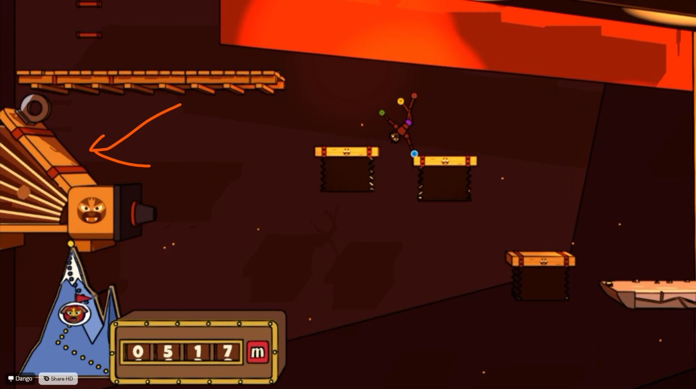
What is going on
The great bellows on the west wall is what makes this challenge hard: it blows a gust east through the three stepping bellows, 1.4 seconds on and 2.6 seconds off, pushing you back the way you came. But the bellows itself is a still model. It never moves. The gust is just wind that happens, with a small warning sound, next to a machine that looks switched off.
The three small bellows you step on do move (each swells 1.8 m and folds on a 4.2 second cycle), but they slide up and down as stiff blocks. Their pleats do not open and close.
Plan
- The great bellows works its own gust. It draws open slowly through the 2.6 seconds of quiet, its pleats spreading and its top board lifting. That is the warning, and you can read exactly how long you have. Then it slams shut over the 1.4 seconds of the gust, and the blast comes out of the nozzle as a visible jet of steam and sparks along the line the wind blows.
- Small touches: the nozzle shudders, the pug face on its box puffs its cheeks, soot shakes off, the frame creaks on the draw and thumps on the blow.
- The three stepping bellows breathe too: their pleats open as they swell and close as they fold, so they read as bellows and not as blocks on springs.
- The top board you land on (it is the ledge that ends the challenge) rides the great bellows' movement only if that can be done without changing the last reach. Otherwise it stays still and the body moves under it.
- The models may need to be cut into parts that can move (pleats, boards, nozzle). If so that is a small job for the Building Maker, asked through the Top Dog session; a first version can squash and stretch the models as they are.